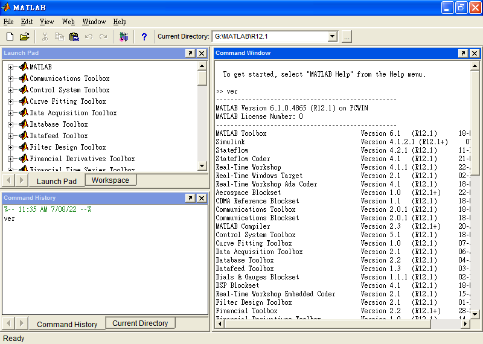

MATLAB之最后一版
目标：收集整理支持特定操作系统的最后一版资料。
安装测试操作系统：Microsoft Windows XP with Service Pack 3 Virtual Machine on RHEL8
西安交通大学MATLAB校园安装指南
R2007b及之前的版本需用Personal License Passcode (PLP) 安装（不同版本PLP不能混用），不用激活；
R2008a及之后版本需登陆MathWorks账号或离线用File Installation Key (FIK) 安装（新版FIK可用于旧版，反之不行），需登陆MathWorks账号或离线用license.dat激活（新版license.dat可用于旧版，反之不行）；
破解：R2013a及之前版本可直接用license.dat离线激活，R2013b及之后版本需替换文件再用license.dat离线激活（猜测与R2013b起新增的SIGN字段有关）。
INCREMENT MATLAB MLM 29 30-aug-2022 uncounted 7F4D0E5E55A6 \
VENDOR_STRING=vi=30:at=186:lu=200:lo=TH:ei=1852012:lr=1:ep=15: \
HOSTID=MATLAB_HOSTID=34E6CDB4:61646D696E6973747261746F72 \
ISSUED=10-Jul-2022 NOTICE=product=MATLAB SN=xxxxxx TS_OK
INCREMENT MATLAB MLM 30 30-aug-2022 uncounted 885A6140DACE \
VENDOR_STRING=vi=30:at=186:lu=200:lo=TH:ei=1852012:lr=1:ep=15: \
HOSTID=MATLAB_HOSTID=34E6CDB4:61646D696E6973747261746F72 \
ISSUED=10-Jul-2022 NOTICE=product=MATLAB SN=xxxxxx TS_OK SIGN="0079 04E4 \
6D04 7598 008D CF65 D8C2 DC00 46B0 7E14 61A8 D61F 8F9F 8CED CB4A"
| R11.1 | MATLAB 5.3.1 | 5.x最后一版 |
| R12.1 | MATLAB 6.1.0 | 最后一版支持Windows 95 |
| R13SP1 | MATLAB 6.5.1 | |
| R13SP2 | MATLAB 6.5.2 | 最后一版支持Windows 98/ME，亦是6.x最后一版 |
| R14SP1 | MATLAB 7.0.1 | |
| R14SP2 | MATLAB 7.0.4 | |
| R14SP3 | MATLAB 7.1.0 | |
| R2006a | MATLAB 7.2.0 | |
| R2006b | MATLAB 7.3.0 | |
| R2007a | MATLAB 7.4.0 | |
| R2007b | MATLAB 7.5.0 | 最后一版支持Windows 2000/PowerPC Macs |
| R2008a | MATLAB 7.6.0 | |
| R2008b | MATLAB 7.7.0 | 最后一版支持Mac OS X Tiger (10.4) |
| R2009a | MATLAB 7.8.0 | |
| R2009b | MATLAB 7.9.0 | |
| R2009bSP1 | MATLAB 7.9.1 | 最后一版支持Solaris |
| R2010a | MATLAB 7.10.0 | 最后一版支持Ubuntu 8.04 LTS/Mac OS X Leopard (10.5)/32-bit Intel Macs |
| R2010b | MATLAB 7.11.0 | |
| R2010bSP1 | MATLAB 7.11.1 | |
| R2010bSP2 | MATLAB 7.11.2 | |
| R2011a | MATLAB 7.12.0 | |
| R2011b | MATLAB 7.13.0 | |
| R2012a | MATLAB 7.14.0 | 最后一版支持Ubuntu 10.04 LTS/32-bit Linux，亦是7.x最后一版、传统界面最后一版 |
| R2012b | MATLAB 8.0.0 | 最后一版支持Mac OS X Snow Leopard (10.6) |
| R2013a | MATLAB 8.1.0 | 最后一版支持Red Hat Enterprise Linux 5 |
| R2013b | MATLAB 8.2.0 | |
| R2014a | MATLAB 8.3.0 | 最后一版支持Ubuntu 12.04 LTS |
| R2014b | MATLAB 8.4.0 | 最后一版支持Mac OS X Mountain Lion (10.8)/Lion (10.7) |
| R2015a | MATLAB 8.5.0 | |
| R2015aSP1 | MATLAB 8.5.1 | 最后一版支持Windows XP/Vista/Mac OS X Mavericks (10.9) |
| R2015b | MATLAB 8.6.0 | 最后一版支持32-bit Windows，亦是8.x最后一版 |
| R2016a | MATLAB 9.0.0 | |
| R2016b | MATLAB 9.1.0 | |
| R2017a | MATLAB 9.2.0 | 最后一版支持Windows 8/Mac OS X Yosemite (10.10) |
| R2017b | MATLAB 9.3.0 | |
| R2018a | MATLAB 9.4.0 | 最后一版支持Windows 8.1/Mac OS X El Capitan (10.11) |
| R2018b | MATLAB 9.5.0 | |
| R2019a | MATLAB 9.6.0 | 最后一版支持Ubuntu 14.04 LTS/macOS Sierra (10.12) |
| R2019b | MATLAB 9.7.0 | |
| R2020a | MATLAB 9.8.0 | 最后一版支持Red Hat Enterprise Linux 6/macOS High Sierra (10.13) |
| R2020b | MATLAB 9.9.0 | |
| R2021a | MATLAB 9.10.0 | 最后一版支持Ubuntu 16.04 LTS/macOS Mojave (10.14) |
| R2021b | MATLAB 9.11.0 | 最后一版支持Windows 7 |
| R2022a | MATLAB 9.12.0 | 最后一版支持macOS Catalina (10.15) |
| R2022b | MATLAB 9.13.0 | |
授权管理员目前可从官网下载R2008b及之后版本的ISO/DMG，其中R2018b及之后版本有集成update的ISO/DMG。
官网ISO/DMG/Updates文件MD5信息(R2008b~R2022a)
非授权管理员目前可从官网下载R2013b及之前版本的离线散装文件（个别工具箱版本比ISO中的新；停止支持的工具箱已下架）和R2014a及之后版本的在线安装程序。
R2008b
MATLAB Report Generator 3.5>3.4
Simulink Report Generator 3.5>3.4
R2011a
Bioinformatics Toolbox 3.8>3.7
R2011b
Simulink Design Verifier 2.1.1>2.1
R2013b
Computer Vision System Toolbox 5.3.1>5.3
LTE System Toolbox 1.0
R2008a及之前版本可随缘搜寻TLF、TBE、CYGiSO等0day组织发过的CD/DVD ROM镜像，相关文件MD5信息：
| R11 1CD | |
| R11.1 1CD | |
| R12 2CD | |
| R12.1 2CD | |
| R13 3CD | |
| R13SP1 3CD | |
| R13SP2 3CD | |
| R14 3CD | |
| R14SP1 3CD | |
| R14SP2 3CD | |
| R14SP3 3CD | |
| R2006a 3CD | |
| R2006b 3CD | |
| R2007a_UNIX.iso | |
| R2007a_Windows.iso | |
| R2007b_UNIX.iso | |
| R2007b_Windows.iso | 89253999f53d0e50a5f342277bb73343 |
| R2008a_UNIX.iso | |
| R2008a_Windows.iso | |
MATLAB R11.1
登录https://www.mathworks.com/downloads/下载，目前可下：
MATLAB_Compiler.exe 5.1 MB 1999/12/16 07:04
Data_Acquisition_Toolbox.exe 5.6 MB 1999/12/16 07:04
Excel_Link.exe 3.0 MB 1999/12/16 07:04
Fuzzy_Logic.exe 6.1 MB 1999/12/16 07:05
System_Identification.exe 5.5 MB 1999/12/16 07:05
Image_Processing.exe 24.0 MB 1999/12/16 07:06
Mapping.exe 63.6 MB 1999/12/16 07:07
Model_Predictive_Control.exe 2.9 MB 1999/12/16 07:09
Neural_Network.exe 5.5 MB 1999/12/16 07:09
Optimization.exe 4.3 MB 1999/12/16 07:10
Partial_Differential_Equation.exe 7.0 MB 1999/12/16 07:10
Real-Time_Workshop.exe 9.6 MB 1999/12/16 07:10
Robust_Control.exe 3.9 MB 1999/12/16 07:10
DSP_Blockset.exe 22.6 MB 1999/12/16 07:10
Signal_Processing.exe 14.5 MB 1999/12/16 07:11
Simulink.exe 19.3 MB 1999/12/16 07:11
Simulink_Report_Generator.exe 2.0 MB 1999/12/16 07:11
Statistics.exe 4.3 MB 1999/12/16 07:11
Symbolic_Math.exe 14.8 MB 1999/12/16 07:12
Wavelet.exe 20.3 MB 1999/12/16 07:12
MATLAB_Report_Generator.exe 10.9 MB 2000/01/04 02:22
Database_Toolbox.exe 11.3 MB 2000/01/04 02:23
MATLAB.exe 19.8 MB 2000/01/06 03:48
Real-Time_Windows_Target.exe 5.8 MB 2000/01/19 05:34
Datafeed_Toolbox.exe 1.3 MB 2000/03/01 05:23
xPC_Target.exe 11.7 MB 2000/03/01 05:23
Communication.exe 17.7 MB 2000/03/16 05:30
Power_System_Blockset.exe 9.9 MB 2000/04/08 01:27
Financial_Toolbox.exe 6.2 MB 2000/09/07 00:01
Stateflow.exe 23.8 MB 2000/10/10 22:53
Control_System.exe 9.4 MB 2001/08/08 22:31
Personal License Passcode (PLP) 只可安装部分工具箱。
11-10224-43044-38818-03811-61063-11324
11-30608-63868-33547-31267-29961-41669
11-57331-07688-52528-02324-05637
?ver
--------------------------------------------------
MATLAB Version 5.3.1.29215a (R11.1) on PCWIN
MATLAB License Number: 76297
--------------------------------------------------
MATLAB Toolbox Version 5.3.1 (R11.1) 08-Sep-1999
Wavelet Toolbox Version 1.2 (R11) 10-Jul-1998
System Identification Toolbox Version 4.0.5 (R11) 10-Apr-1998
Symbolic Math Toolbox Version 2.1.1 (R11.1) 10-Sep-1999
Statistics Toolbox Version 2.2 (R11) 24-Jul-1998
Simulink Report Generator Version 1.0 (R11) 05-Dec-1998
Signal Processing Toolbox Version 4.3 (R11.1) 01-Jun-1999
Robust Control Toolbox Version 2.0.6 (R11) 10-Apr-1998
Real-Time Windows Target Version 1.5 (R11.1) 09-Nov-1999
Power System Blockset Version 2.0 (R11.1) 15-Feb-2000
Partial Differential Equation Toolbox Version 1.0.3 (R11) 21-Nov-1997
Optimization Toolbox Version 2.0 (R11) 09-Oct-1998
Neural Network Toolbox Version 3.0.1 (R11) 01-Jul-1998
Model Predictive Control Toolbox Version 1.0.4 (R11) 03-Sep-1998
MATLAB Report Generator Version 1.0.1 (R11.1) 10-Sep-1999
MATLAB Compiler (and Compiler 1.2.1) Version 2.0.2 (R11.1) 10-Sep-1999
Mapping Toolbox Version 1.1 (R11) 04-Sep-1998
Image Processing Toolbox Version 2.2.1 (R11.1) 27-Jul-1999
Fuzzy Logic Toolbox Version 2.0.1 (R11) 16-Sep-1998
Financial Toolbox Version 2.1.2 (R11.1) 01-Sep-1999
DSP Blockset Version 3.1 (R11.1) 24-Jun-1999
Data Acquisition Toolbox Version 1.0.1 (R11.1) 10-Sep-1999
Database Toolbox Version 2.0.1 (R11.1) 01-Sep-1999
Control System Toolbox Version 4.2.1 (R11.1) 10-Sep-1999
Communications Toolbox Version 1.5.1 (R11.1) 10-Mar-2000
Stateflow Version 3.0.3 (R11.1) 06-Oct-2000
Simulink Version 3.0.1 (R11.1) 10-Sep-1999
?
MATLAB R12.1

登录https://www.mathworks.com/downloads/下载，目前可下：
Communications_Toolbox.exe 4.9 MB 2001/06/23 01:37
Control_System_Toolbox.exe 23.3 MB 2001/06/23 01:37
Database_Toolbox.exe 4.5 MB 2001/06/23 01:37
Datafeed_Toolbox.exe 4.0 MB 2001/06/23 01:37
Excel_Link.exe 4.3 MB 2001/06/23 01:37
Fuzzy_Logic_Toolbox.exe 5.6 MB 2001/06/23 01:38
System_Identification_Toolbox.exe 6.2 MB 2001/06/23 01:38
Image_Processing_Toolbox.exe 48.4 MB 2001/06/23 01:38
Instrument_Control_Toolbox.exe 4.8 MB 2001/06/23 01:38
Mapping_Toolbox.exe 28.5 MB 2001/06/23 01:38
MATLAB_Report_Generator.exe 9.6 MB 2001/06/23 01:39
Model_Predictive_Control_Toolbox.exe 5.4 MB 2001/06/23 01:39
Neural_Network_Toolbox.exe 7.0 MB 2001/06/23 01:40
Optimization_Toolbox.exe 5.2 MB 2001/06/23 01:40
Partial_Differential_Equation_Toolbox.exe 3.9 MB 2001/06/23 01:40
Power_System_Blockset.exe 7.4 MB 2001/06/23 01:40
Real-Time_Windows_Target.exe 4.7 MB 2001/06/23 01:40
DSP_Blockset.exe 14.6 MB 2001/06/23 01:40
Signal_Processing_Toolbox.exe 13.0 MB 2001/06/23 01:40
Simulink_Report_Generator.exe 4.8 MB 2001/06/23 01:41
Statistics_Toolbox.exe 5.2 MB 2001/06/23 01:41
Symbolic_Math_Toolbox.exe 12.5 MB 2001/06/23 01:41
Virtual_Reality_Toolbox.exe 22.0 MB 2001/06/23 01:41
Wavelet_Toolbox.exe 14.1 MB 2001/06/23 01:41
Robust_Control_Toolbox.exe 4.1 MB 2001/06/23 02:22
Curve_Fitting_Toolbox.exe 5.6 MB 2001/07/20 19:35
Data_Acquisition_Toolbox.exe 5.5 MB 2001/08/08 22:31
xPC_Target.exe 14.6 MB 2001/10/09 04:50
Financial_Toolbox.exe 5.2 MB 2001/10/16 04:44
Model-Based_Calibration_Toolbox.exe 23.5 MB 2001/12/12 23:26
MATLAB_Compiler.exe 12.2 MB 2001/12/18 05:57
SimMechanics.exe 21.6 MB 2001/12/21 05:20
Real-Time_Workshop.exe 12.1 MB 2002/01/10 06:36
Real-Time_Workshop_Embedded_Coder.exe 3.9 MB 2002/01/10 06:37
Stateflow.exe 12.0 MB 2002/01/10 06:38
Aerospace_Blockset.exe 5.2 MB 2002/04/11 06:12
Simulink.exe 29.3 MB 2003/05/29 22:27
MATLAB.exe 49.0 MB 2003/05/29 23:00
Personal License Passcode (PLP) 可安装绝大部分工具箱。
12-64042-09547-15401-43505-29671-38658-29723-39869-39940-28469-44038-63530-19683-53951
>> ver
--------------------------------------------------
MATLAB Version 6.1.0.4865 (R12.1) on PCWIN
MATLAB License Number: 0
--------------------------------------------------
MATLAB Toolbox Version 6.1 (R12.1) 18-May-2001
Simulink Version 4.1.2.1 (R12.1+) 07-Apr-2003
Stateflow Version 4.2.1 (R12.1) 11-Dec-2001
Stateflow Coder Version 4.1 (R12.1) 21-May-2001
Real-Time Workshop Version 4.1.1 (R12.1) 22-Aug-2001
Real-Time Windows Target Version 2.1 (R12.1) 02-Feb-2001
Real-Time Workshop Ada Coder Version 4.1 (R12.1) 18-May-2001
Aerospace Blockset Version 1.0 (R12.1+) 22-Mar-2002
CDMA Reference Blockset Version 1.1 (R12.1) 18-May-2001
Communications Toolbox Version 2.0.1 (R12.1) 18-May-2001
Communications Blockset Version 2.0.1 (R12.1) 18-May-2001
MATLAB Compiler Version 2.3 (R12.1+) 20-Aug-2001
Control System Toolbox Version 5.1 (R12.1) 18-May-2001
Curve Fitting Toolbox Version 1.0 (R12.1) 07-Jun-2001
Data Acquisition Toolbox Version 2.1 (R12.1) 06-Apr-2001
Database Toolbox Version 2.2 (R12.1) 04-Jan-2001
Datafeed Toolbox Version 1.3 (R12.1) 03-Jan-2001
Dials & Gauges Blockset Version 1.1.1 (R12.1) 02-Feb-2001
DSP Blockset Version 4.1 (R12.1) 18-May-2001
Real-Time Workshop Embedded Coder Version 2.1 (R12.1) 15-Aug-2001
Filter Design Toolbox Version 2.1 (R12.1) 01-Feb-2001
Financial Toolbox Version 2.2 (R12.1+) 28-Sep-2001
Financial Derivatives Toolbox Version 1.0 (R12.1) 14-Aug-2000
Fixed-Point Blockset Version 3.1 (R12.1) 18-May-2001
Financial Time Series Toolbox Version 1.1 (R12.1) 01-Dec-2000
Fuzzy Logic Toolbox Version 2.1.1 (R12.1) 18-May-2001
GARCH Toolbox Version 1.0 (R12.1) 01-Jun-1999
System Identification Toolbox Version 5.0.1 (R12.1) 18-May-2001
Image Processing Toolbox Version 3.1 (R12.1) 18-May-2001
Instrument Control Toolbox Version 1.1 (R12.1) 18-May-2001
LMI Control Toolbox Version 1.0.7 (R12.1) 18-May-2001
Mapping Toolbox Version 1.2 (R12.1) 22-May-2000
Model-Based Calibration Toolbox Version 1.0 (R12.1) 03-Dec-2001
SimMechanics Version 1.0 (R12.1) 26-Oct-2001
Motorola DSP Developer's Kit Version 1.1 (R12.1) 01-Sep-2000
Model Predictive Control Toolbox Version 1.0.6 (R12.1) 18-May-2001
Mu-Analysis and Synthesis Toolbox Version 3.0.6 (R12.1) 18-May-2001
Nonlinear Control Design Blockset Version 1.1.5 (R12.1) 18-May-2001
Neural Network Toolbox Version 4.0.1 (R12.1) 02-Feb-2001
Optimization Toolbox Version 2.1.1 (R12.1) 18-May-2001
Partial Differential Equation Toolbox Version 1.0.4 (R12.1) 06-Apr-2001
Simulink Performance Tools Version 1.1 (R12.1) 18-May-2001
Power System Blockset Version 2.2 (R12.1) 06-Apr-2001
Requirements Management Interface Version 1.0.2 (R12.1) 30-Nov-2000
Robust Control Toolbox Version 2.0.8 (R12.1) 18-May-2001
MATLAB Report Generator Version 1.2 (R12.1) 01-Apr-2001
Simulink Report Generator Version 1.2 (R12.1) 01-Apr-2001
MATLAB Runtime Server Development Kit Version 6.1 (R12.1) 18-May-2001
SB2SL (converts SystemBuild to Simu... Version 2.2 (R12.1) 10-Apr-2001
Signal Processing Toolbox Version 5.1 (R12.1) 06-Apr-2001
Spline Toolbox Version 3.0 (R12.1) 13-Mar-2000
Statistics Toolbox Version 3.0 (R12.1) 01-Sep-2000
Symbolic Math Toolbox Version 2.1.2 (R12.1) 11-Sep-2000
Developer's Kit for TI(tm) DSP Version 1.1 (R12.1) 08-Jun-2001
Virtual Reality Toolbox Version 2.0 (R12.1) 06-Apr-2001
Wavelet Toolbox Version 2.1 (R12.1) 06-Apr-2001
MATLAB Web Server Version 1.2.1 (R12.1) 23-Apr-2001
xPC Target Version 1.3 (R12.1) 05-Sep-2001
xPC Target Embedded Option Version 1.2 (R12.1) 09-Apr-2001
>>
缺4个：
Excel Link 1.1.3
Extended Symbolic Math Toolbox 2.1.2
MATLAB C/C++ Graphics Library 2.2
MATLAB C/C++ Math Library 2.2
MATLAB R13SP2
登录https://www.mathworks.com/downloads/下载，目前可下：
Aerospace_Blockset.exe 8.2 MB 2004/10/05 23:48
Bioinformatics_Toolbox.exe 12.6 MB 2004/10/05 23:48
Communications_Toolbox.exe 7.1 MB 2004/10/05 23:48
MATLAB_Compiler.exe 28.2 MB 2004/10/05 23:48
Control_System_Toolbox.exe 18.9 MB 2004/10/05 23:48
Curve_Fitting_Toolbox.exe 8.5 MB 2004/10/05 23:48
Database_Toolbox.exe 5.4 MB 2004/10/05 23:48
Datafeed_Toolbox.exe 5.2 MB 2004/10/05 23:48
Data_Acquisition_Toolbox.exe 9.3 MB 2004/10/05 23:48
Excel_Link.exe 5.6 MB 2004/10/05 23:48
Financial_Toolbox.exe 6.4 MB 2004/10/05 23:48
Fuzzy_Logic_Toolbox.exe 8.3 MB 2004/10/05 23:48
Genetic_Algorithm_Direct_Search_Toolbox.exe 6.2 MB 2004/10/05 23:48
System_Identification_Toolbox.exe 6.3 MB 2004/10/05 23:48
Image_Acquisition_Toolbox.exe 20.7 MB 2004/10/05 23:48
Image_Processing_Toolbox.exe 98.3 MB 2004/10/05 23:48
Instrument_Control_Toolbox.exe 5.9 MB 2004/10/05 23:48
Mapping_Toolbox.exe 56.3 MB 2004/10/05 23:49
MATLAB.exe 65.1 MB 2004/10/05 23:49
MATLAB_Report_Generator.exe 11.5 MB 2004/10/05 23:49
Model-Based_Calibration_Toolbox.exe 20.3 MB 2004/10/05 23:49
Model_Predictive_Control_Toolbox.exe 6.4 MB 2004/10/05 23:49
Neural_Network_Toolbox.exe 9.9 MB 2004/10/05 23:49
Optimization_Toolbox.exe 7.6 MB 2004/10/05 23:49
Partial_Differential_Equation_Toolbox.exe 10.5 MB 2004/10/05 23:49
Real-Time_Windows_Target.exe 5.7 MB 2004/10/05 23:49
SimPowerSystems.exe 18.4 MB 2004/10/05 23:49
Real-Time_Workshop.exe 12.5 MB 2004/10/05 23:49
Robust_Control_Toolbox.exe 6.8 MB 2004/10/05 23:49
Real-Time_Workshop_Embedded_Coder.exe 6.0 MB 2004/10/05 23:49
DSP_Blockset.exe 21.9 MB 2004/10/05 23:49
Signal_Processing_Toolbox.exe 19.8 MB 2004/10/05 23:49
SimMechanics.exe 32.4 MB 2004/10/05 23:49
Simulink.exe 34.6 MB 2004/10/05 23:49
Simulink_Report_Generator.exe 5.9 MB 2004/10/05 23:49
Stateflow.exe 18.7 MB 2004/10/05 23:49
Statistics_Toolbox.exe 7.6 MB 2004/10/05 23:49
Symbolic_Math_Toolbox.exe 23.2 MB 2004/10/05 23:49
Virtual_Reality_Toolbox.exe 24.4 MB 2004/10/05 23:50
Wavelet_Toolbox.exe 24.8 MB 2004/10/05 23:50
xPC_Target.exe 24.7 MB 2004/10/05 23:50
批量解压：
7z x *.exe -y
用R13安装包中的jins.exe替换R13SP2的，运行setup.exe开始安装。
Personal License Passcode (PLP) 用R13的，可安装全部工具箱。
13-22935-54640-30039-45949-41945-37494-18536-34124-63074-33671-08341-01230-63402-23598
13-22955-32678-26249-06848-40366-39620-03472-09765-20949-30945-19673-43738-38950-44548
以上两个Personal License Passcode (PLP) 可安装的工具箱数量一样，用其中一个即可。
>> ver
-------------------------------------------------------------------------------------
MATLAB Version 6.5.2.202935 (R13) Service Pack 2
MATLAB License Number: 0
Operating System: Microsoft Windows XP Version 5.1 (Build 2600: Service Pack 3)
Java VM Version: Java 1.3.1_01 with Sun Microsystems Inc. Java HotSpot(TM) Client VM
-------------------------------------------------------------------------------------
MATLAB Version 6.5.2 (R13SP2)
Simulink Version 5.2 (R13SP2)
Aerospace Blockset Version 1.5.1 (R13SP2)
Bioinformatics Toolbox Version 1.0.1 (R13SP2)
Communications Toolbox Version 2.1 (R13SP2)
Control System Toolbox Version 5.2.1 (R13SP2)
Curve Fitting Toolbox Version 1.1 (R13SP2)
DSP Blockset Version 5.1.1 (R13SP2)
Data Acquisition Toolbox Version 2.2 (R13SP2)
Database Toolbox Version 2.2.1 (R13SP2)
Datafeed Toolbox Version 1.4.1 (R13SP2)
Excel Link Version 2.1 (R13SP2)
Financial Toolbox Version 2.3 (R13SP2)
Fuzzy Logic Toolbox Version 2.1.2 (R13SP2)
Image Acquisition Toolbox Version 1.1 (R13SP2)
Image Processing Toolbox Version 4.1 (R13SP2)
Instrument Control Toolbox Version 1.2 (R13SP2)
MATLAB Compiler Version 3.0.1 (R13SP2)
MATLAB Report Generator Version 1.3 (R13SP2)
Mapping Toolbox Version 2.0.1 (R13SP2)
Model Predictive Control Toolbox Version 1.0.7 (R13SP2)
Model-Based Calibration Toolbox Version 2.0 (R13SP2)
Neural Network Toolbox Version 4.0.2 (R13SP2)
Optimization Toolbox Version 2.3 (R13SP2)
Partial Differential Equation Toolbox Version 1.0.4 (R13SP2)
Real-Time Windows Target Version 2.2 (R13SP2)
Real-Time Workshop Version 5.2 (R13SP2)
Real-Time Workshop Embedded Coder Version 3.2.1 (R13SP2)
Robust Control Toolbox Version 2.0.9 (R13SP2)
Signal Processing Toolbox Version 6.1 (R13SP2)
SimMechanics Version 2.1.1 (R13SP2)
SimPowerSystems Version 3.0 (R13SP2)
Simulink Report Generator Version 1.3 (R13SP2)
Stateflow Version 5.1.2 (R13SP2)
Statistics Toolbox Version 4.1 (R13SP2)
Symbolic Math Toolbox Version 3.0.1 (R13SP2)
System Identification Toolbox Version 6.0 (R13SP2)
Virtual Reality Toolbox Version 3.1.1 (R13SP2)
Wavelet Toolbox Version 2.2 (R13SP2)
xPC Target Version 2.0.3 (R13SP2)
>>
与R13相比，缺少以下工具箱：
CDMA Reference Blockset Version 1.1 (R13)
Communications Blockset Version 2.5 (R13)
Dials & Gauges Blockset Version 1.1.2 (R13)
Embedded Target for Motorola MPC555 Version 1.0.1 (R13)
Embedded Target for Texas Instruments C6000 DSP Version 1.0 (R13)
Filter Design Toolbox Version 2.2 (R13)
Financial Derivatives Toolbox Version 2.0 (R13)
Financial Time Series Toolbox Version 2.0 (R13)
Fixed-Point Blockset Version 4.0 (R13)
GARCH Toolbox Version 1.0.2 (R13)
LMI Control Toolbox Version 1.0.8 (R13)
MATLAB COM Builder Version 1.0 (R13)
MATLAB Excel Builder Version 1.1 (R13)
MATLAB Link for Code Composer Studio Version 1.0 (R13)
MATLAB Runtime Server Development Kit Version 6.1.1 (R13)
MATLAB Web Server Version 1.2.2 (R13)
Mu-Analysis and Synthesis Toolbox Version 3.0.7 (R13)
Nonlinear Control Design Blockset Version 1.1.6 (R13)
Requirements Management Interface Version 1.0.4 (R13)
SB2SL (converts SystemBuild to Simulink) Version 2.5 (R13)
Simulink Performance Tools Version 1.2 (R13)
Spline Toolbox Version 3.1.1 (R13)
Stateflow Coder Version 5.0 (R13)
xPC Target Embedded Option Version 2.0 (R13)
附R13全部工具箱资料：
>> ver
-------------------------------------------------------------------------------------
MATLAB Version 6.5.0.180913a (R13)
MATLAB License Number: 0
Operating System: Microsoft Windows XP Version 5.1 (Build 2600: Service Pack 3)
Java VM Version: Java 1.3.1_01 with Sun Microsystems Inc. Java HotSpot(TM) Client VM
-------------------------------------------------------------------------------------
MATLAB Version 6.5 (R13)
Simulink Version 5.0 (R13)
Aerospace Blockset Version 1.0.1 (R13)
CDMA Reference Blockset Version 1.1 (R13)
Communications Blockset Version 2.5 (R13)
Communications Toolbox Version 2.1 (R13)
Control System Toolbox Version 5.2 (R13)
Curve Fitting Toolbox Version 1.1 (R13)
DSP Blockset Version 5.0 (R13)
Data Acquisition Toolbox Version 2.2 (R13)
Database Toolbox Version 2.2.1 (R13)
Datafeed Toolbox Version 1.3.1 (R13)
Dials & Gauges Blockset Version 1.1.2 (R13)
Embedded Target for Motorola MPC555 Version 1.0.1 (R13)
Embedded Target for Texas Instrumen... Version 1.0 (R13)
Excel Link Version 2.0 (R13)
Filter Design Toolbox Version 2.2 (R13)
Financial Derivatives Toolbox Version 2.0 (R13)
Financial Time Series Toolbox Version 2.0 (R13)
Financial Toolbox Version 2.2.1 (R13)
Fixed-Point Blockset Version 4.0 (R13)
Fuzzy Logic Toolbox Version 2.1.2 (R13)
GARCH Toolbox Version 1.0.2 (R13)
Image Processing Toolbox Version 3.2 (R13)
Instrument Control Toolbox Version 1.2 (R13)
LMI Control Toolbox Version 1.0.8 (R13)
MATLAB COM Builder Version 1.0 (R13)
MATLAB Compiler Version 3.0 (R13)
MATLAB Excel Builder Version 1.1 (R13)
MATLAB Link for Code Composer Studi... Version 1.0 (R13)
MATLAB Report Generator Version 1.3 (R13)
MATLAB Runtime Server Development Kit Version 6.1.1 (R13)
MATLAB Web Server Version 1.2.2 (R13)
Mapping Toolbox Version 1.3 (R13)
Model Predictive Control Toolbox Version 1.0.7 (R13)
Model-Based Calibration Toolbox Version 1.1 (R13)
Mu-Analysis and Synthesis Toolbox Version 3.0.7 (R13)
Neural Network Toolbox Version 4.0.2 (R13)
Nonlinear Control Design Blockset Version 1.1.6 (R13)
Optimization Toolbox Version 2.2 (R13)
Partial Differential Equation Toolbox Version 1.0.4 (R13)
Real-Time Windows Target Version 2.2 (R13)
Real-Time Workshop Version 5.0 (R13)
Real-Time Workshop Embedded Coder Version 3.0 (R13)
Requirements Management Interface Version 1.0.4 (R13)
Robust Control Toolbox Version 2.0.9 (R13)
SB2SL (converts SystemBuild to Simu... Version 2.5 (R13)
Signal Processing Toolbox Version 6.0 (R13)
SimMechanics Version 1.1 (R13)
SimPowerSystems Version 2.3 (R13)
Simulink Performance Tools Version 1.2 (R13)
Simulink Report Generator Version 1.3 (R13)
Spline Toolbox Version 3.1.1 (R13)
Stateflow Version 5.0 (R13)
Stateflow Coder Version 5.0 (R13)
Statistics Toolbox Version 4.0 (R13)
Symbolic Math Toolbox Version 2.1.3 (R13)
System Identification Toolbox Version 5.0.2 (R13)
Virtual Reality Toolbox Version 3.0 (R13)
Wavelet Toolbox Version 2.2 (R13)
xPC Target Version 2.0 (R13)
xPC Target Embedded Option Version 2.0 (R13)
>>
MATLAB R2007b
Personal License Passcode (PLP) 可安装全部工具箱。
18-41519-34649-39940-00621-01988-02577-01245-51575-44112-12966-44686-37374-43430-36283-64095-18584-34803-54175-05965-54469-56859-47170-56703-00300-00857-63903-48349-07297-57752-37962-48933-62342-43508-41646-31266-38461-54713-50260-57403-18654-13756-59612-18880
>> ver
-------------------------------------------------------------------------------------
MATLAB Version 7.5.0.342 (R2007b)
MATLAB License Number: 161052
Operating System: Microsoft Windows XP Version 5.1 (Build 2600: Service Pack 3)
Java VM Version: Java 1.6.0 with Sun Microsystems Inc. Java HotSpot(TM) Client VM mixed mode
-------------------------------------------------------------------------------------
MATLAB Version 7.5 (R2007b)
Simulink Version 7.0.1 (R2007b+)
Aerospace Blockset Version 3.0 (R2007b)
Aerospace Toolbox Version 2.0 (R2007b)
Bioinformatics Toolbox Version 3.0 (R2007b)
Communications Blockset Version 3.6 (R2007b)
Communications Toolbox Version 4.0 (R2007b)
Control System Toolbox Version 8.0.1 (R2007b)
Curve Fitting Toolbox Version 1.2 (R2007b)
Data Acquisition Toolbox Version 2.11 (R2007b)
Database Toolbox Version 3.4 (R2007b)
Datafeed Toolbox Version 3.0 (R2007b)
Distributed Computing Toolbox Version 3.2 (R2007b)
Excel Link Version 3.0 (R2007b)
Extended Symbolic Math Toolbox Version 3.2.2 (R2007b)
Filter Design HDL Coder Version 2.1 (R2007b)
Filter Design Toolbox Version 4.2 (R2007b)
Financial Derivatives Toolbox Version 5.1 (R2007b)
Financial Toolbox Version 3.3 (R2007b)
Fixed-Income Toolbox Version 1.4 (R2007b)
Fixed-Point Toolbox Version 2.1.1 (R2007b+)
Fuzzy Logic Toolbox Version 2.2.6 (R2007b)
GARCH Toolbox Version 2.3.2 (R2007b)
Gauges Blockset Version 2.0.5 (R2007b)
Genetic Algorithm and Direct Search Toolbox Version 2.2 (R2007b)
Image Acquisition Toolbox Version 3.0 (R2007b)
Image Processing Toolbox Version 6.0 (R2007b)
Instrument Control Toolbox Version 2.5 (R2007b)
Link for Analog Devices VisualDSP++ Version 1.1 (R2007b)
Link for Cadence Incisive Version 2.1 (R2007b)
Link for Code Composer Studio Version 3.1 (R2007b)
Link for ModelSim Version 2.3 (R2007b)
Link for TASKING Version 1.2 (R2007b)
MATLAB Builder for .NET Version 2.2.1 (R2007b)
MATLAB Builder for Excel Version 1.2.9 (R2007b)
MATLAB Builder for Java Version 2.0 (R2007b)
MATLAB Compiler Version 4.7 (R2007b)
MATLAB Distributed Computing Engine Version 3.2 (R2007b)
MATLAB Report Generator Version 3.2.1 (R2007b)
Mapping Toolbox Version 2.6 (R2007b)
Model Predictive Control Toolbox Version 2.3 (R2007b)
Model-Based Calibration Toolbox Version 3.3.1 (R2007b+)
Neural Network Toolbox Version 5.1 (R2007b)
OPC Toolbox Version 2.1 (R2007b)
Optimization Toolbox Version 3.1.2 (R2007b)
Partial Differential Equation Toolbox Version 1.0.11 (R2007b)
RF Blockset Version 2.1 (R2007b)
RF Toolbox Version 2.2 (R2007b)
Real-Time Windows Target Version 3.0 (R2007b)
Real-Time Workshop Version 7.0.1 (R2007b+)
Real-Time Workshop Embedded Coder Version 5.0.1 (R2007b+)
Robust Control Toolbox Version 3.3 (R2007b)
Signal Processing Blockset Version 6.6 (R2007b)
Signal Processing Toolbox Version 6.8 (R2007b)
SimBiology Version 2.2 (R2007b+)
SimDriveline Version 1.4 (R2007b)
SimEvents Version 2.1 (R2007b)
SimHydraulics Version 1.2.1 (R2007b)
SimMechanics Version 2.7 (R2007b)
SimPowerSystems Version 4.5 (R2007b)
Simscape Version 2.0.1 (R2007b+)
Simulink Control Design Version 2.2 (R2007b)
Simulink Design Verifier Version 1.1.1 (R2007b+)
Simulink Fixed Point Version 5.5 (R2007b)
Simulink HDL Coder Version 1.2 (R2007b)
Simulink Parameter Estimation Version 1.2.1 (R2007b)
Simulink Report Generator Version 3.2.1 (R2007b)
Simulink Response Optimization Version 3.1.2 (R2007b)
Simulink Verification and Validation Version 2.2.1 (R2007b+)
Spline Toolbox Version 3.3.3 (R2007b)
Stateflow Version 7.0.1 (R2007b+)
Stateflow Coder Version 7.0 (R2007b)
Statistics Toolbox Version 6.1 (R2007b)
Symbolic Math Toolbox Version 4.9 (R2007b+)
System Identification Toolbox Version 7.1 (R2007b)
SystemTest Version 2.0 (R2007b)
Target for Freescale MPC5xx Version 2.2 (R2007b)
Target for Infineon C166 Version 1.5 (R2007b)
Target for TI C2000(tm) Version 2.3 (R2007b)
Target for TI C6000(tm) Version 3.3 (R2007b)
Video and Image Processing Blockset Version 2.4 (R2007b)
Virtual Reality Toolbox Version 4.6 (R2007b)
Wavelet Toolbox Version 4.1 (R2007b)
xPC Target Version 3.3 (R2007b)
xPC Target Embedded Option Version 3.3 (R2007b)
Trademarks
------------------
MATLAB, Simulink, Stateflow, Handle Graphics, Real-Time Workshop, and xPC
TargetBox are registered trademarks and SimBiology, SimEvents, and
SimHydraulics are trademarks of The MathWorks, Inc. Other product or
brand names are trademarks or registered trademarks of their respective
holders.
>>
其中以下11个工具箱官网目前可下较新版本（与ISO相比）：
Fixed-Point Toolbox 2.1.1
Model-Based Calibration Toolbox 3.3.1
Real-Time Workshop 7.0.1
Real-Time Workshop Embedded Coder 5.0.1
SimBiology 2.2
Simscape 2.0.1
Simulink 7.0.1
Simulink Design Verifier 1.1.1
Simulink Verification and Validation 2.2.1
Stateflow 7.0.1
Symbolic Math Toolbox 4.9
MATLAB R2008b~R2015aSP1 安装
File Installation Key (FIK) 可安装全部工具箱。
09806-07443-53955-64350-21751-41297 #安装除MATLAB Production Server外的工具箱（可用于R2008a~R2021a）
40236-45817-26714-51426-39281 #安装MATLAB Production Server（R2012b开始有此工具箱）
Lic_Standalone_R2013a.dat（此授权文件可通过官方License Manager的许可证验证，能架设私服授权不限时不限数量的客户端，理论上可用于激活R2013a及之前的所有版本，参考lmgrd.log、lmstat.log）：
>> ver
-------------------------------------------------------------------------------------
MATLAB Version 7.7.0.471 (R2008b)
MATLAB License Number: 874166
Operating System: Microsoft Windows XP Version 5.1 (Build 2600: Service Pack 3)
Java VM Version: Java 1.6.0_04 with Sun Microsystems Inc. Java HotSpot(TM) Client VM mixed mode
-------------------------------------------------------------------------------------
MATLAB Version 7.7 (R2008b)
Simulink Version 7.2 (R2008b)
Aerospace Blockset Version 3.2 (R2008b)
Aerospace Toolbox Version 2.2 (R2008b)
Bioinformatics Toolbox Version 3.2 (R2008b)
Communications Blockset Version 4.1 (R2008b)
Communications Toolbox Version 4.2 (R2008b)
Control System Toolbox Version 8.2 (R2008b)
Curve Fitting Toolbox Version 1.2.2 (R2008b)
Data Acquisition Toolbox Version 2.13 (R2008b)
Database Toolbox Version 3.5 (R2008b)
Datafeed Toolbox Version 3.2 (R2008b)
EDA Simulator Link DS Version 2.0 (R2008b)
EDA Simulator Link IN Version 2.3 (R2008b)
EDA Simulator Link MQ Version 2.5 (R2008b)
Econometrics Toolbox Version 1.0 (R2008b)
Embedded IDE Link CC Version 3.3 (R2008b)
Embedded IDE Link MU Version 1.1 (R2008b)
Embedded IDE Link TS Version 1.3.1 (R2008b)
Embedded IDE Link VS Version 2.1 (R2008b)
Filter Design HDL Coder Version 2.3 (R2008b)
Filter Design Toolbox Version 4.4 (R2008b)
Financial Derivatives Toolbox Version 5.3 (R2008b)
Financial Toolbox Version 3.5 (R2008b)
Fixed-Income Toolbox Version 1.6 (R2008b)
Fixed-Point Toolbox Version 2.3 (R2008b)
Fuzzy Logic Toolbox Version 2.2.8 (R2008b)
Gauges Blockset Version 2.0.5 (R2008b)
Genetic Algorithm and Direct Search Toolbox Version 2.4 (R2008b)
Image Acquisition Toolbox Version 3.2 (R2008b)
Image Processing Toolbox Version 6.2 (R2008b)
Instrument Control Toolbox Version 2.7 (R2008b)
MATLAB Builder EX Version 1.2.11 (R2008b)
MATLAB Builder JA Version 2.0.2 (R2008b)
MATLAB Builder NE Version 3.0 (R2008b)
MATLAB Compiler Version 4.9 (R2008b)
MATLAB Distributed Computing Server Version 4.0 (R2008b)
MATLAB Report Generator Version 3.4 (R2008b)
Mapping Toolbox Version 2.7.1 (R2008b)
Model Predictive Control Toolbox Version 3.0 (R2008b)
Model-Based Calibration Toolbox Version 3.5 (R2008b)
Neural Network Toolbox Version 6.0.1 (R2008b)
OPC Toolbox Version 2.1.2 (R2008b)
Optimization Toolbox Version 4.1 (R2008b)
Parallel Computing Toolbox Version 4.0 (R2008b)
Partial Differential Equation Toolbox Version 1.0.13 (R2008b)
RF Blockset Version 2.3 (R2008b)
RF Toolbox Version 2.4 (R2008b)
Real-Time Windows Target Version 3.2 (R2008b)
Real-Time Workshop Version 7.2 (R2008b)
Real-Time Workshop Embedded Coder Version 5.2 (R2008b)
Robust Control Toolbox Version 3.3.2 (R2008b)
Signal Processing Blockset Version 6.8 (R2008b)
Signal Processing Toolbox Version 6.10 (R2008b)
SimBiology Version 2.4 (R2008b)
SimDriveline Version 1.5.1 (R2008b)
SimElectronics Version 1.1 (R2008b)
SimEvents Version 2.3 (R2008b)
SimHydraulics Version 1.4 (R2008b)
SimMechanics Version 3.0 (R2008b)
SimPowerSystems Version 5.0 (R2008b)
Simscape Version 3.0 (R2008b)
Simulink Control Design Version 2.4 (R2008b)
Simulink Design Verifier Version 1.3 (R2008b)
Simulink Fixed Point Version 6.0 (R2008b)
Simulink HDL Coder Version 1.4 (R2008b)
Simulink Parameter Estimation Version 1.2.3 (R2008b)
Simulink Report Generator Version 3.4 (R2008b)
Simulink Response Optimization Version 3.2 (R2008b)
Simulink Verification and Validation Version 2.4 (R2008b)
Spline Toolbox Version 3.3.5 (R2008b)
Spreadsheet Link EX Version 3.0.2 (R2008b)
Stateflow Version 7.2 (R2008b)
Stateflow Coder Version 7.2 (R2008b)
Statistics Toolbox Version 7.0 (R2008b)
Symbolic Math Toolbox Version 5.1 (R2008b)
System Identification Toolbox Version 7.2.1 (R2008b)
SystemTest Version 2.2 (R2008b)
Target Support Package FM5 Version 2.2.2 (R2008b)
Target Support Package IC1 Version 1.5.2 (R2008b)
Target Support Package TC2 Version 3.1 (R2008b)
Target Support Package TC6 Version 3.5 (R2008b)
Video and Image Processing Blockset Version 2.6 (R2008b)
Virtual Reality Toolbox Version 4.8 (R2008b)
Wavelet Toolbox Version 4.3 (R2008b)
xPC Target Version 4.0 (R2008b)
xPC Target Embedded Option Version 4.0 (R2008b)
>>
>> ver
-------------------------------------------------------------------------------------
MATLAB Version 7.8.0.347 (R2009a)
MATLAB License Number: 874166
Operating System: Microsoft Windows XP Version 5.1 (Build 2600: Service Pack 3)
Java VM Version: Java 1.6.0_04-b12 with Sun Microsystems Inc. Java HotSpot(TM) Client VM mixed mode
-------------------------------------------------------------------------------------
MATLAB Version 7.8 (R2009a)
Simulink Version 7.3 (R2009a)
Aerospace Blockset Version 3.3 (R2009a)
Aerospace Toolbox Version 2.3 (R2009a)
Bioinformatics Toolbox Version 3.3 (R2009a)
Communications Blockset Version 4.2 (R2009a)
Communications Toolbox Version 4.3 (R2009a)
Control System Toolbox Version 8.3 (R2009a)
Curve Fitting Toolbox Version 2.0 (R2009a)
Data Acquisition Toolbox Version 2.14 (R2009a)
Database Toolbox Version 3.5.1 (R2009a)
Datafeed Toolbox Version 3.3 (R2009a)
EDA Simulator Link DS Version 2.1 (R2009a)
EDA Simulator Link IN Version 2.4 (R2009a)
EDA Simulator Link MQ Version 2.6 (R2009a)
Econometrics Toolbox Version 1.1 (R2009a)
Embedded IDE Link CC Version 3.4 (R2009a)
Embedded IDE Link MU Version 1.2 (R2009a)
Embedded IDE Link TS Version 1.4 (R2009a)
Embedded IDE Link VS Version 2.2 (R2009a)
Filter Design HDL Coder Version 2.4 (R2009a)
Filter Design Toolbox Version 4.5 (R2009a)
Financial Derivatives Toolbox Version 5.4 (R2009a)
Financial Toolbox Version 3.6 (R2009a)
Fixed-Income Toolbox Version 1.7 (R2009a)
Fixed-Point Toolbox Version 2.4 (R2009a)
Fuzzy Logic Toolbox Version 2.2.9 (R2009a)
Gauges Blockset Version 2.0.5 (R2009a)
Genetic Algorithm and Direct Search Toolbox Version 2.4.1 (R2009a)
Image Acquisition Toolbox Version 3.3 (R2009a)
Image Processing Toolbox Version 6.3 (R2009a)
Instrument Control Toolbox Version 2.8 (R2009a)
MATLAB Builder EX Version 1.2.12 (R2009a)
MATLAB Builder JA Version 2.0.3 (R2009a)
MATLAB Builder NE Version 3.0.1 (R2009a)
MATLAB Compiler Version 4.10 (R2009a)
MATLAB Distributed Computing Server Version 4.1 (R2009a)
MATLAB Report Generator Version 3.6 (R2009a)
Mapping Toolbox Version 2.7.2 (R2009a)
Model Predictive Control Toolbox Version 3.1 (R2009a)
Model-Based Calibration Toolbox Version 3.6 (R2009a)
Neural Network Toolbox Version 6.0.2 (R2009a)
OPC Toolbox Version 2.1.3 (R2009a)
Optimization Toolbox Version 4.2 (R2009a)
Parallel Computing Toolbox Version 4.1 (R2009a)
Partial Differential Equation Toolbox Version 1.0.14 (R2009a)
RF Blockset Version 2.4 (R2009a)
RF Toolbox Version 2.5 (R2009a)
Real-Time Windows Target Version 3.3 (R2009a)
Real-Time Workshop Version 7.3 (R2009a)
Real-Time Workshop Embedded Coder Version 5.3 (R2009a)
Robust Control Toolbox Version 3.3.3 (R2009a)
Signal Processing Blockset Version 6.9 (R2009a)
Signal Processing Toolbox Version 6.11 (R2009a)
SimBiology Version 3.0 (R2009a)
SimDriveline Version 1.5.2 (R2009a)
SimElectronics Version 1.2 (R2009a)
SimEvents Version 2.4 (R2009a)
SimHydraulics Version 1.5 (R2009a)
SimMechanics Version 3.1 (R2009a)
SimPowerSystems Version 5.1 (R2009a)
Simscape Version 3.1 (R2009a)
Simulink 3D Animation Version 5.0 (R2009a)
Simulink Control Design Version 2.5 (R2009a)
Simulink Design Optimization Version 1.0 (R2009a)
Simulink Design Verifier Version 1.4 (R2009a)
Simulink Fixed Point Version 6.1 (R2009a)
Simulink HDL Coder Version 1.5 (R2009a)
Simulink Report Generator Version 3.6 (R2009a)
Simulink Verification and Validation Version 2.5 (R2009a)
Spline Toolbox Version 3.3.6 (R2009a)
Spreadsheet Link EX Version 3.0.3 (R2009a)
Stateflow Version 7.3 (R2009a)
Stateflow Coder Version 7.3 (R2009a)
Statistics Toolbox Version 7.1 (R2009a)
Symbolic Math Toolbox Version 5.2 (R2009a)
System Identification Toolbox Version 7.3 (R2009a)
SystemTest Version 2.3 (R2009a)
Target Support Package FM5 Version 2.2.3 (R2009a)
Target Support Package IC1 Version 1.5.3 (R2009a)
Target Support Package TC2 Version 3.2 (R2009a)
Target Support Package TC6 Version 3.6 (R2009a)
Vehicle Network Toolbox Version 1.0 (R2009a)
Video and Image Processing Blockset Version 2.7 (R2009a)
Wavelet Toolbox Version 4.4 (R2009a)
xPC Target Version 4.1 (R2009a)
xPC Target Embedded Option Version 4.1 (R2009a)
>>
>> ver
-------------------------------------------------------------------------------------
MATLAB Version 7.9.0.529 (R2009b)
MATLAB License Number: 874166
Operating System: Microsoft Windows XP Version 5.1 (Build 2600: Service Pack 3)
Java VM Version: Java 1.6.0_12-b04 with Sun Microsystems Inc. Java HotSpot(TM) Client VM mixed mode
-------------------------------------------------------------------------------------
MATLAB Version 7.9 (R2009b)
Simulink Version 7.4 (R2009b)
Aerospace Blockset Version 3.4 (R2009b)
Aerospace Toolbox Version 2.4 (R2009b)
Bioinformatics Toolbox Version 3.4 (R2009b)
Communications Blockset Version 4.3 (R2009b)
Communications Toolbox Version 4.4 (R2009b)
Control System Toolbox Version 8.4 (R2009b)
Curve Fitting Toolbox Version 2.1 (R2009b)
Data Acquisition Toolbox Version 2.15 (R2009b)
Database Toolbox Version 3.6 (R2009b)
Datafeed Toolbox Version 3.4 (R2009b)
EDA Simulator Link Version 3.0 (R2009b)
Econometrics Toolbox Version 1.2 (R2009b)
Embedded IDE Link Version 4.0 (R2009b)
Filter Design HDL Coder Version 2.5 (R2009b)
Filter Design Toolbox Version 4.6 (R2009b)
Financial Derivatives Toolbox Version 5.5 (R2009b)
Financial Toolbox Version 3.7 (R2009b)
Fixed-Income Toolbox Version 1.8 (R2009b)
Fixed-Point Toolbox Version 3.0 (R2009b)
Fuzzy Logic Toolbox Version 2.2.10 (R2009b)
Gauges Blockset Version 2.0.5 (R2009b)
Genetic Algorithm and Direct Search Toolbox Version 2.4.2 (R2009b)
Image Acquisition Toolbox Version 3.4 (R2009b)
Image Processing Toolbox Version 6.4 (R2009b)
Instrument Control Toolbox Version 2.9 (R2009b)
MATLAB Builder EX Version 1.2.13 (R2009b)
MATLAB Builder JA Version 2.0.4 (R2009b)
MATLAB Builder NE Version 3.0.2 (R2009b)
MATLAB Compiler Version 4.11 (R2009b)
MATLAB Distributed Computing Server Version 4.2 (R2009b)
MATLAB Report Generator Version 3.7 (R2009b)
Mapping Toolbox Version 3.0 (R2009b)
Model Predictive Control Toolbox Version 3.1.1 (R2009b)
Model-Based Calibration Toolbox Version 3.7 (R2009b)
Neural Network Toolbox Version 6.0.3 (R2009b)
OPC Toolbox Version 2.1.4 (R2009b)
Optimization Toolbox Version 4.3 (R2009b)
Parallel Computing Toolbox Version 4.2 (R2009b)
Partial Differential Equation Toolbox Version 1.0.15 (R2009b)
RF Blockset Version 2.5 (R2009b)
RF Toolbox Version 2.6 (R2009b)
Real-Time Windows Target Version 3.4 (R2009b)
Real-Time Workshop Version 7.4 (R2009b)
Real-Time Workshop Embedded Coder Version 5.4 (R2009b)
Robust Control Toolbox Version 3.4 (R2009b)
Signal Processing Blockset Version 6.10 (R2009b)
Signal Processing Toolbox Version 6.12 (R2009b)
SimBiology Version 3.1 (R2009b)
SimDriveline Version 1.5.3 (R2009b)
SimElectronics Version 1.3 (R2009b)
SimEvents Version 3.0 (R2009b)
SimHydraulics Version 1.6 (R2009b)
SimMechanics Version 3.1.1 (R2009b)
SimPowerSystems Version 5.2 (R2009b)
Simscape Version 3.2 (R2009b)
Simulink 3D Animation Version 5.1 (R2009b)
Simulink Control Design Version 3.0 (R2009b)
Simulink Design Optimization Version 1.1 (R2009b)
Simulink Design Verifier Version 1.5 (R2009b)
Simulink Fixed Point Version 6.2 (R2009b)
Simulink HDL Coder Version 1.6 (R2009b)
Simulink Report Generator Version 3.7 (R2009b)
Simulink Verification and Validation Version 2.6 (R2009b)
Spline Toolbox Version 3.3.7 (R2009b)
Spreadsheet Link EX Version 3.1 (R2009b)
Stateflow Version 7.4 (R2009b)
Stateflow Coder Version 7.4 (R2009b)
Statistics Toolbox Version 7.2 (R2009b)
Symbolic Math Toolbox Version 5.3 (R2009b)
System Identification Toolbox Version 7.3.1 (R2009b)
SystemTest Version 2.4 (R2009b)
Target Support Package Version 4.0 (R2009b)
Vehicle Network Toolbox Version 1.1 (R2009b)
Video and Image Processing Blockset Version 2.8 (R2009b)
Wavelet Toolbox Version 4.4.1 (R2009b)
xPC Target Version 4.2 (R2009b)
xPC Target Embedded Option Version 4.2 (R2009b)
>>
>> ver
-------------------------------------------------------------------------------------
MATLAB Version 7.9.1.705 (R2009b) Service Pack 1
MATLAB License Number: 874166
Operating System: Microsoft Windows XP Version 5.1 (Build 2600: Service Pack 3)
Java VM Version: Java 1.6.0_12-b04 with Sun Microsystems Inc. Java HotSpot(TM) Client VM mixed mode
-------------------------------------------------------------------------------------
MATLAB Version 7.9.1 (R2009bSP1)
Simulink Version 7.4.1 (R2009bSP1)
Aerospace Blockset Version 3.4 (R2009bSP1)
Aerospace Toolbox Version 2.4 (R2009bSP1)
Bioinformatics Toolbox Version 3.4 (R2009bSP1)
Communications Blockset Version 4.3 (R2009bSP1)
Communications Toolbox Version 4.4 (R2009bSP1)
Control System Toolbox Version 8.4 (R2009bSP1)
Curve Fitting Toolbox Version 2.1 (R2009bSP1)
DO Qualification Kit Version 1.1.1 (R2009bSP1)
Data Acquisition Toolbox Version 2.15 (R2009bSP1)
Database Toolbox Version 3.6 (R2009bSP1)
Datafeed Toolbox Version 3.4 (R2009bSP1)
EDA Simulator Link Version 3.0 (R2009bSP1)
Econometrics Toolbox Version 1.2 (R2009bSP1)
Embedded IDE Link Version 4.0.1 (R2009bSP1)
Filter Design HDL Coder Version 2.5 (R2009bSP1)
Filter Design Toolbox Version 4.6 (R2009bSP1)
Financial Derivatives Toolbox Version 5.5 (R2009bSP1)
Financial Toolbox Version 3.7 (R2009bSP1)
Fixed-Income Toolbox Version 1.8 (R2009bSP1)
Fixed-Point Toolbox Version 3.0 (R2009bSP1)
Fuzzy Logic Toolbox Version 2.2.10 (R2009bSP1)
Gauges Blockset Version 2.0.5 (R2009bSP1)
Genetic Algorithm and Direct Search Toolbox Version 2.4.2 (R2009bSP1)
Image Acquisition Toolbox Version 3.4 (R2009bSP1)
Image Processing Toolbox Version 6.4 (R2009bSP1)
Instrument Control Toolbox Version 2.9 (R2009bSP1)
MATLAB Builder EX Version 1.2.14 (R2009bSP1)
MATLAB Builder JA Version 2.0.5 (R2009bSP1)
MATLAB Builder NE Version 3.0.3 (R2009bSP1)
MATLAB Compiler Version 4.12 (R2009bSP1)
MATLAB Distributed Computing Server Version 4.2 (R2009bSP1)
MATLAB Report Generator Version 3.7 (R2009bSP1)
Mapping Toolbox Version 3.0 (R2009bSP1)
Model Predictive Control Toolbox Version 3.1.1 (R2009bSP1)
Model-Based Calibration Toolbox Version 3.7 (R2009bSP1)
Neural Network Toolbox Version 6.0.3 (R2009bSP1)
OPC Toolbox Version 2.1.4 (R2009bSP1)
Optimization Toolbox Version 4.3 (R2009bSP1)
Parallel Computing Toolbox Version 4.2 (R2009bSP1)
Partial Differential Equation Toolbox Version 1.0.15 (R2009bSP1)
RF Blockset Version 2.5 (R2009bSP1)
RF Toolbox Version 2.6 (R2009bSP1)
Real-Time Windows Target Version 3.4 (R2009bSP1)
Real-Time Workshop Version 7.4.1 (R2009bSP1)
Real-Time Workshop Embedded Coder Version 5.4.1 (R2009bSP1)
Robust Control Toolbox Version 3.4 (R2009bSP1)
Signal Processing Blockset Version 6.10 (R2009bSP1)
Signal Processing Toolbox Version 6.12 (R2009bSP1)
SimBiology Version 3.1 (R2009bSP1)
SimDriveline Version 1.5.3 (R2009bSP1)
SimElectronics Version 1.3 (R2009bSP1)
SimEvents Version 3.0 (R2009bSP1)
SimHydraulics Version 1.6 (R2009bSP1)
SimMechanics Version 3.1.1 (R2009bSP1)
SimPowerSystems Version 5.2 (R2009bSP1)
Simscape Version 3.2 (R2009bSP1)
Simulink 3D Animation Version 5.1 (R2009bSP1)
Simulink Control Design Version 3.0 (R2009bSP1)
Simulink Design Optimization Version 1.1 (R2009bSP1)
Simulink Design Verifier Version 1.5.1 (R2009bSP1)
Simulink Fixed Point Version 6.2 (R2009bSP1)
Simulink HDL Coder Version 1.6 (R2009bSP1)
Simulink Report Generator Version 3.7 (R2009bSP1)
Simulink Verification and Validation Version 2.6.1 (R2009bSP1)
Spline Toolbox Version 3.3.7 (R2009bSP1)
Spreadsheet Link EX Version 3.1 (R2009bSP1)
Stateflow Version 7.4.1 (R2009bSP1)
Stateflow Coder Version 7.4.1 (R2009bSP1)
Statistics Toolbox Version 7.2 (R2009bSP1)
Symbolic Math Toolbox Version 5.3 (R2009bSP1)
System Identification Toolbox Version 7.3.1 (R2009bSP1)
SystemTest Version 2.4 (R2009bSP1)
Target Support Package Version 4.0 (R2009bSP1)
Vehicle Network Toolbox Version 1.1 (R2009bSP1)
Video and Image Processing Blockset Version 2.8 (R2009bSP1)
Wavelet Toolbox Version 4.4.1 (R2009bSP1)
xPC Target Version 4.2.1 (R2009bSP1)
xPC Target Embedded Option Version 4.2 (R2009bSP1)
>>

>> ver
-------------------------------------------------------------------------------------
MATLAB Version 7.10.0.499 (R2010a)
MATLAB License Number: 874166
Operating System: Microsoft Windows XP Version 5.1 (Build 2600: Service Pack 3)
Java VM Version: Java 1.6.0_12-b04 with Sun Microsystems Inc. Java HotSpot(TM) Client VM mixed mode
-------------------------------------------------------------------------------------
MATLAB Version 7.10 (R2010a)
Simulink Version 7.5 (R2010a)
Aerospace Blockset Version 3.5 (R2010a)
Aerospace Toolbox Version 2.5 (R2010a)
Bioinformatics Toolbox Version 3.5 (R2010a)
Communications Blockset Version 4.4 (R2010a)
Communications Toolbox Version 4.5 (R2010a)
Control System Toolbox Version 8.5 (R2010a)
Curve Fitting Toolbox Version 2.2 (R2010a)
DO Qualification Kit Version 1.2 (R2010a)
Data Acquisition Toolbox Version 2.16 (R2010a)
Database Toolbox Version 3.7 (R2010a)
Datafeed Toolbox Version 3.5 (R2010a)
EDA Simulator Link Version 3.1 (R2010a)
Econometrics Toolbox Version 1.3 (R2010a)
Embedded IDE Link Version 4.1 (R2010a)
Filter Design HDL Coder Version 2.6 (R2010a)
Filter Design Toolbox Version 4.7 (R2010a)
Financial Derivatives Toolbox Version 5.5.1 (R2010a)
Financial Toolbox Version 3.7.1 (R2010a)
Fixed-Income Toolbox Version 1.9 (R2010a)
Fixed-Point Toolbox Version 3.1 (R2010a)
Fuzzy Logic Toolbox Version 2.2.11 (R2010a)
Gauges Blockset Version 2.0.5 (R2010a)
Global Optimization Toolbox Version 3.0 (R2010a)
IEC Certification Kit Version 1.2 (R2010a)
Image Acquisition Toolbox Version 3.5 (R2010a)
Image Processing Toolbox Version 7.0 (R2010a)
Instrument Control Toolbox Version 2.10 (R2010a)
MATLAB Builder EX Version 1.2.15 (R2010a)
MATLAB Builder JA Version 2.1 (R2010a)
MATLAB Builder NE Version 3.1 (R2010a)
MATLAB Compiler Version 4.13 (R2010a)
MATLAB Distributed Computing Server Version 4.3 (R2010a)
MATLAB Report Generator Version 3.8 (R2010a)
Mapping Toolbox Version 3.1 (R2010a)
Model Predictive Control Toolbox Version 3.2 (R2010a)
Model-Based Calibration Toolbox Version 4.0 (R2010a)
Neural Network Toolbox Version 6.0.4 (R2010a)
OPC Toolbox Version 2.1.5 (R2010a)
Optimization Toolbox Version 5.0 (R2010a)
Parallel Computing Toolbox Version 4.3 (R2010a)
Partial Differential Equation Toolbox Version 1.0.16 (R2010a)
RF Blockset Version 2.5.1 (R2010a)
RF Toolbox Version 2.7 (R2010a)
Real-Time Windows Target Version 3.5 (R2010a)
Real-Time Workshop Version 7.5 (R2010a)
Real-Time Workshop Embedded Coder Version 5.5 (R2010a)
Robust Control Toolbox Version 3.4.1 (R2010a)
Signal Processing Blockset Version 7.0 (R2010a)
Signal Processing Toolbox Version 6.13 (R2010a)
SimBiology Version 3.2 (R2010a)
SimDriveline Version 1.5.4 (R2010a)
SimElectronics Version 1.4 (R2010a)
SimEvents Version 3.1 (R2010a)
SimHydraulics Version 1.7 (R2010a)
SimMechanics Version 3.2 (R2010a)
SimPowerSystems Version 5.2.1 (R2010a)
Simscape Version 3.3 (R2010a)
Simulink 3D Animation Version 5.1.1 (R2010a)
Simulink Control Design Version 3.1 (R2010a)
Simulink Design Optimization Version 1.1.1 (R2010a)
Simulink Design Verifier Version 1.6 (R2010a)
Simulink Fixed Point Version 6.3 (R2010a)
Simulink HDL Coder Version 1.7 (R2010a)
Simulink PLC Coder Version 1.0 (R2010a)
Simulink Report Generator Version 3.8 (R2010a)
Simulink Verification and Validation Version 2.7 (R2010a)
Spline Toolbox Version 3.3.8 (R2010a)
Spreadsheet Link EX Version 3.1.1 (R2010a)
Stateflow Version 7.5 (R2010a)
Stateflow Coder Version 7.5 (R2010a)
Statistics Toolbox Version 7.3 (R2010a)
Symbolic Math Toolbox Version 5.4 (R2010a)
System Identification Toolbox Version 7.4 (R2010a)
SystemTest Version 2.5 (R2010a)
Target Support Package Version 4.1 (R2010a)
Vehicle Network Toolbox Version 1.2 (R2010a)
Video and Image Processing Blockset Version 3.0 (R2010a)
Wavelet Toolbox Version 4.5 (R2010a)
xPC Target Version 4.3 (R2010a)
xPC Target Embedded Option Version 4.3 (R2010a)
>>
>> ver
-------------------------------------------------------------------------------------
MATLAB Version 7.11.0.584 (R2010b)
MATLAB License Number: 874166
Operating System: Microsoft Windows XP Version 5.1 (Build 2600: Service Pack 3)
Java VM Version: Java 1.6.0_17-b04 with Sun Microsystems Inc. Java HotSpot(TM) Client VM mixed mode
-------------------------------------------------------------------------------------
MATLAB Version 7.11 (R2010b)
Simulink Version 7.6 (R2010b)
Aerospace Blockset Version 3.6 (R2010b)
Aerospace Toolbox Version 2.6 (R2010b)
Bioinformatics Toolbox Version 3.6 (R2010b)
Communications Blockset Version 5.0 (R2010b)
Communications Toolbox Version 4.6 (R2010b)
Control System Toolbox Version 9.0 (R2010b)
Curve Fitting Toolbox Version 3.0 (R2010b)
DO Qualification Kit Version 1.3 (R2010b)
Data Acquisition Toolbox Version 2.17 (R2010b)
Database Toolbox Version 3.8 (R2010b)
Datafeed Toolbox Version 4.0 (R2010b)
EDA Simulator Link Version 3.2 (R2010b)
Econometrics Toolbox Version 1.4 (R2010b)
Embedded IDE Link Version 4.2 (R2010b)
Filter Design HDL Coder Version 2.7 (R2010b)
Filter Design Toolbox Version 4.7.1 (R2010b)
Financial Derivatives Toolbox Version 5.6 (R2010b)
Financial Toolbox Version 3.8 (R2010b)
Fixed-Income Toolbox Version 2.0 (R2010b)
Fixed-Point Toolbox Version 3.2 (R2010b)
Fuzzy Logic Toolbox Version 2.2.12 (R2010b)
Gauges Blockset Version 2.0.5 (R2010b)
Global Optimization Toolbox Version 3.1 (R2010b)
IEC Certification Kit Version 1.3 (R2010b)
Image Acquisition Toolbox Version 4.0 (R2010b)
Image Processing Toolbox Version 7.1 (R2010b)
Instrument Control Toolbox Version 2.11 (R2010b)
MATLAB Builder EX Version 1.3 (R2010b)
MATLAB Builder JA Version 2.2 (R2010b)
MATLAB Builder NE Version 3.2 (R2010b)
MATLAB Compiler Version 4.14 (R2010b)
MATLAB Distributed Computing Server Version 5.0 (R2010b)
MATLAB Report Generator Version 3.9 (R2010b)
Mapping Toolbox Version 3.2 (R2010b)
Model Predictive Control Toolbox Version 3.2.1 (R2010b)
Model-Based Calibration Toolbox Version 4.1 (R2010b)
Neural Network Toolbox Version 7.0 (R2010b)
OPC Toolbox Version 2.1.6 (R2010b)
Optimization Toolbox Version 5.1 (R2010b)
Parallel Computing Toolbox Version 5.0 (R2010b)
Parallel Computing Toolbox Version 5.0 (R2010b)
Partial Differential Equation Toolbox Version 1.0.17 (R2010b)
RF Toolbox Version 2.8 (R2010b)
Real-Time Windows Target Version 3.6 (R2010b)
Real-Time Workshop Version 7.6 (R2010b)
Real-Time Workshop Embedded Coder Version 5.6 (R2010b)
Robust Control Toolbox Version 3.5 (R2010b)
Signal Processing Blockset Version 7.1 (R2010b)
Signal Processing Toolbox Version 6.14 (R2010b)
SimBiology Version 3.3 (R2010b)
SimDriveline Version 1.5.5 (R2010b)
SimElectronics Version 1.5 (R2010b)
SimEvents Version 3.1.1 (R2010b)
SimHydraulics Version 1.8 (R2010b)
SimMechanics Version 3.2.1 (R2010b)
SimPowerSystems Version 5.3 (R2010b)
SimRF Version 3.0 (R2010b)
Simscape Version 3.4 (R2010b)
Simulink 3D Animation Version 5.2 (R2010b)
Simulink Control Design Version 3.2 (R2010b)
Simulink Design Optimization Version 1.2 (R2010b)
Simulink Design Verifier Version 1.7 (R2010b)
Simulink Fixed Point Version 6.4 (R2010b)
Simulink HDL Coder Version 2.0 (R2010b)
Simulink PLC Coder Version 1.1 (R2010b)
Simulink Report Generator Version 3.9 (R2010b)
Simulink Verification and Validation Version 3.0 (R2010b)
Spreadsheet Link EX Version 3.1.2 (R2010b)
Stateflow Version 7.6 (R2010b)
Stateflow Coder Version 7.6 (R2010b)
Statistics Toolbox Version 7.4 (R2010b)
Symbolic Math Toolbox Version 5.5 (R2010b)
System Identification Toolbox Version 7.4.1 (R2010b)
SystemTest Version 2.6 (R2010b)
Target Support Package Version 4.2 (R2010b)
Vehicle Network Toolbox Version 1.3 (R2010b)
Video and Image Processing Blockset Version 3.1 (R2010b)
Wavelet Toolbox Version 4.6 (R2010b)
xPC Target Version 4.4 (R2010b)
xPC Target Embedded Option Version 4.4 (R2010b)
>>
>> ver
-------------------------------------------------------------------------------------
MATLAB Version 7.11.1.866 (R2010b) Service Pack 1
MATLAB License Number: 874166
Operating System: Microsoft Windows XP Version 5.1 (Build 2600: Service Pack 3)
Java VM Version: Java 1.6.0_17-b04 with Sun Microsystems Inc. Java HotSpot(TM) Client VM mixed mode
-------------------------------------------------------------------------------------
MATLAB Version 7.11.1 (R2010bSP1)
Simulink Version 7.6.1 (R2010bSP1)
Aerospace Blockset Version 3.6 (R2010bSP1)
Aerospace Toolbox Version 2.6 (R2010bSP1)
Bioinformatics Toolbox Version 3.6 (R2010bSP1)
Communications Blockset Version 5.0 (R2010bSP1)
Communications Toolbox Version 4.6 (R2010bSP1)
Control System Toolbox Version 9.0 (R2010bSP1)
Curve Fitting Toolbox Version 3.0 (R2010bSP1)
DO Qualification Kit Version 1.3.1 (R2010bSP1)
Data Acquisition Toolbox Version 2.17 (R2010bSP1)
Database Toolbox Version 3.8 (R2010bSP1)
Datafeed Toolbox Version 4.0 (R2010bSP1)
EDA Simulator Link Version 3.2 (R2010bSP1)
Econometrics Toolbox Version 1.4 (R2010bSP1)
Embedded IDE Link Version 4.2 (R2010bSP1)
Filter Design HDL Coder Version 2.7 (R2010bSP1)
Filter Design Toolbox Version 4.7.1 (R2010bSP1)
Financial Derivatives Toolbox Version 5.6 (R2010bSP1)
Financial Toolbox Version 3.8 (R2010bSP1)
Fixed-Income Toolbox Version 2.0 (R2010bSP1)
Fixed-Point Toolbox Version 3.2 (R2010bSP1)
Fuzzy Logic Toolbox Version 2.2.12 (R2010bSP1)
Gauges Blockset Version 2.0.5 (R2010bSP1)
Global Optimization Toolbox Version 3.1 (R2010bSP1)
IEC Certification Kit Version 1.3 (R2010bSP1)
Image Acquisition Toolbox Version 4.0 (R2010bSP1)
Image Processing Toolbox Version 7.1 (R2010bSP1)
Instrument Control Toolbox Version 2.11 (R2010bSP1)
MATLAB Builder EX Version 1.3.1 (R2010bSP1)
MATLAB Builder JA Version 2.2.1 (R2010bSP1)
MATLAB Builder NE Version 3.2.1 (R2010bSP1)
MATLAB Compiler Version 4.14.1 (R2010bSP1)
MATLAB Distributed Computing Server Version 5.0 (R2010bSP1)
MATLAB Report Generator Version 3.9 (R2010bSP1)
Mapping Toolbox Version 3.2 (R2010bSP1)
Model Predictive Control Toolbox Version 3.2.1 (R2010bSP1)
Model-Based Calibration Toolbox Version 4.1 (R2010bSP1)
Neural Network Toolbox Version 7.0 (R2010bSP1)
OPC Toolbox Version 2.1.6 (R2010bSP1)
Optimization Toolbox Version 5.1 (R2010bSP1)
Parallel Computing Toolbox Version 5.0 (R2010bSP1)
Parallel Computing Toolbox Version 5.0 (R2010bSP1)
Partial Differential Equation Toolbox Version 1.0.17 (R2010bSP1)
RF Toolbox Version 2.8 (R2010bSP1)
Real-Time Windows Target Version 3.6 (R2010bSP1)
Real-Time Workshop Version 7.6.1 (R2010bSP1)
Real-Time Workshop Embedded Coder Version 5.6.1 (R2010bSP1)
Robust Control Toolbox Version 3.5 (R2010bSP1)
Signal Processing Blockset Version 7.1 (R2010bSP1)
Signal Processing Toolbox Version 6.14 (R2010bSP1)
SimBiology Version 3.3 (R2010bSP1)
SimDriveline Version 1.5.5 (R2010bSP1)
SimElectronics Version 1.5 (R2010bSP1)
SimEvents Version 3.1.1 (R2010bSP1)
SimHydraulics Version 1.8 (R2010bSP1)
SimMechanics Version 3.2.1 (R2010bSP1)
SimPowerSystems Version 5.3 (R2010bSP1)
SimRF Version 3.0.1 (R2010bSP1)
Simscape Version 3.4 (R2010bSP1)
Simulink 3D Animation Version 5.2 (R2010bSP1)
Simulink Control Design Version 3.2 (R2010bSP1)
Simulink Design Optimization Version 1.2 (R2010bSP1)
Simulink Design Verifier Version 1.7.1 (R2010bSP1)
Simulink Fixed Point Version 6.4 (R2010bSP1)
Simulink HDL Coder Version 2.0 (R2010bSP1)
Simulink PLC Coder Version 1.1 (R2010bSP1)
Simulink Report Generator Version 3.9 (R2010bSP1)
Simulink Verification and Validation Version 3.0.1 (R2010bSP1)
Spreadsheet Link EX Version 3.1.2 (R2010bSP1)
Stateflow Version 7.6.1 (R2010bSP1)
Stateflow Coder Version 7.6.1 (R2010bSP1)
Statistics Toolbox Version 7.4 (R2010bSP1)
Symbolic Math Toolbox Version 5.5 (R2010bSP1)
System Identification Toolbox Version 7.4.1 (R2010bSP1)
SystemTest Version 2.6 (R2010bSP1)
Target Support Package Version 4.2 (R2010bSP1)
Vehicle Network Toolbox Version 1.3 (R2010bSP1)
Video and Image Processing Blockset Version 3.1 (R2010bSP1)
Wavelet Toolbox Version 4.6 (R2010bSP1)
xPC Target Version 4.4 (R2010bSP1)
xPC Target Embedded Option Version 4.4 (R2010bSP1)
>>
>> ver
-------------------------------------------------------------------------------------
MATLAB Version 7.11.2.1031 (R2010b) Service Pack 2
MATLAB License Number: 874166
Operating System: Microsoft Windows XP Version 5.1 (Build 2600: Service Pack 3)
Java VM Version: Java 1.6.0_17-b04 with Sun Microsystems Inc. Java HotSpot(TM) Client VM mixed mode
-------------------------------------------------------------------------------------
MATLAB Version 7.11.2 (R2010bSP2)
Simulink Version 7.6.2 (R2010bSP2)
Aerospace Blockset Version 3.6 (R2010bSP2)
Aerospace Toolbox Version 2.6 (R2010bSP2)
Bioinformatics Toolbox Version 3.6 (R2010bSP2)
Communications Blockset Version 5.0 (R2010bSP2)
Communications Toolbox Version 4.6 (R2010bSP2)
Control System Toolbox Version 9.0 (R2010bSP2)
Curve Fitting Toolbox Version 3.0 (R2010bSP2)
DO Qualification Kit Version 1.3.2 (R2010bSP2)
Data Acquisition Toolbox Version 2.17 (R2010bSP2)
Database Toolbox Version 3.8 (R2010bSP2)
Datafeed Toolbox Version 4.0 (R2010bSP2)
EDA Simulator Link Version 3.2 (R2010bSP2)
Econometrics Toolbox Version 1.4 (R2010bSP2)
Embedded IDE Link Version 4.2 (R2010bSP2)
Filter Design HDL Coder Version 2.7 (R2010bSP2)
Filter Design Toolbox Version 4.7.1 (R2010bSP2)
Financial Derivatives Toolbox Version 5.6 (R2010bSP2)
Financial Toolbox Version 3.8 (R2010bSP2)
Fixed-Income Toolbox Version 2.0 (R2010bSP2)
Fixed-Point Toolbox Version 3.2 (R2010bSP2)
Fuzzy Logic Toolbox Version 2.2.12 (R2010bSP2)
Gauges Blockset Version 2.0.5 (R2010bSP2)
Global Optimization Toolbox Version 3.1 (R2010bSP2)
IEC Certification Kit Version 1.3 (R2010bSP2)
Image Acquisition Toolbox Version 4.0 (R2010bSP2)
Image Processing Toolbox Version 7.1 (R2010bSP2)
Instrument Control Toolbox Version 2.11 (R2010bSP2)
MATLAB Builder EX Version 1.3.1 (R2010bSP2)
MATLAB Builder JA Version 2.2.1 (R2010bSP2)
MATLAB Builder NE Version 3.2.1 (R2010bSP2)
MATLAB Compiler Version 4.14.1 (R2010bSP2)
MATLAB Distributed Computing Server Version 5.0 (R2010bSP2)
MATLAB Report Generator Version 3.9 (R2010bSP2)
Mapping Toolbox Version 3.2 (R2010bSP2)
Model Predictive Control Toolbox Version 3.2.1 (R2010bSP2)
Model-Based Calibration Toolbox Version 4.1 (R2010bSP2)
Neural Network Toolbox Version 7.0 (R2010bSP2)
OPC Toolbox Version 2.1.6 (R2010bSP2)
Optimization Toolbox Version 5.1 (R2010bSP2)
Parallel Computing Toolbox Version 5.0 (R2010bSP2)
Parallel Computing Toolbox Version 5.0 (R2010bSP2)
Partial Differential Equation Toolbox Version 1.0.17 (R2010bSP2)
RF Toolbox Version 2.8 (R2010bSP2)
Real-Time Windows Target Version 3.6 (R2010bSP2)
Real-Time Workshop Version 7.6.2 (R2010bSP2)
Real-Time Workshop Embedded Coder Version 5.6.2 (R2010bSP2)
Robust Control Toolbox Version 3.5 (R2010bSP2)
Signal Processing Blockset Version 7.1 (R2010bSP2)
Signal Processing Toolbox Version 6.14 (R2010bSP2)
SimBiology Version 3.3 (R2010bSP2)
SimDriveline Version 1.5.5 (R2010bSP2)
SimElectronics Version 1.5 (R2010bSP2)
SimEvents Version 3.1.1 (R2010bSP2)
SimHydraulics Version 1.8 (R2010bSP2)
SimMechanics Version 3.2.1 (R2010bSP2)
SimPowerSystems Version 5.3 (R2010bSP2)
SimRF Version 3.0.1 (R2010bSP2)
Simscape Version 3.4 (R2010bSP2)
Simulink 3D Animation Version 5.2 (R2010bSP2)
Simulink Control Design Version 3.2 (R2010bSP2)
Simulink Design Optimization Version 1.2 (R2010bSP2)
Simulink Design Verifier Version 1.7.1 (R2010bSP2)
Simulink Fixed Point Version 6.4.1 (R2010bSP2)
Simulink HDL Coder Version 2.0 (R2010bSP2)
Simulink PLC Coder Version 1.1 (R2010bSP2)
Simulink Report Generator Version 3.9 (R2010bSP2)
Simulink Verification and Validation Version 3.0.1 (R2010bSP2)
Spreadsheet Link EX Version 3.1.2 (R2010bSP2)
Stateflow Version 7.6.2 (R2010bSP2)
Stateflow Coder Version 7.6.2 (R2010bSP2)
Statistics Toolbox Version 7.4 (R2010bSP2)
Symbolic Math Toolbox Version 5.5 (R2010bSP2)
System Identification Toolbox Version 7.4.1 (R2010bSP2)
SystemTest Version 2.6 (R2010bSP2)
Target Support Package Version 4.2 (R2010bSP2)
Vehicle Network Toolbox Version 1.3 (R2010bSP2)
Video and Image Processing Blockset Version 3.1 (R2010bSP2)
Wavelet Toolbox Version 4.6 (R2010bSP2)
xPC Target Version 4.4 (R2010bSP2)
xPC Target Embedded Option Version 4.4 (R2010bSP2)
>>
>> ver
-------------------------------------------------------------------------------------
MATLAB Version 7.12.0.635 (R2011a)
MATLAB License Number: 874166
Operating System: Microsoft Windows XP Version 5.1 (Build 2600: Service Pack 3)
Java VM Version: Java 1.6.0_17-b04 with Sun Microsystems Inc. Java HotSpot(TM) Client VM mixed mode
-------------------------------------------------------------------------------------
MATLAB Version 7.12 (R2011a)
Simulink Version 7.7 (R2011a)
Aerospace Blockset Version 3.7 (R2011a)
Aerospace Toolbox Version 2.7 (R2011a)
Bioinformatics Toolbox Version 3.7 (R2011a)
Communications System Toolbox Version 5.0 (R2011a)
Computer Vision System Toolbox Version 4.0 (R2011a)
Control System Toolbox Version 9.1 (R2011a)
Curve Fitting Toolbox Version 3.1 (R2011a)
DO Qualification Kit Version 1.4 (R2011a)
DSP System Toolbox Version 8.0 (R2011a)
Data Acquisition Toolbox Version 2.18 (R2011a)
Database Toolbox Version 3.9 (R2011a)
Datafeed Toolbox Version 4.1 (R2011a)
EDA Simulator Link Version 3.3 (R2011a)
Econometrics Toolbox Version 2.0 (R2011a)
Embedded Coder Version 6.0 (R2011a)
Filter Design HDL Coder Version 2.8 (R2011a)
Financial Derivatives Toolbox Version 5.7 (R2011a)
Financial Toolbox Version 4.0 (R2011a)
Fixed-Income Toolbox Version 2.1 (R2011a)
Fixed-Point Toolbox Version 3.3 (R2011a)
Fuzzy Logic Toolbox Version 2.2.13 (R2011a)
Gauges Blockset Version 2.0.5 (R2011a)
Global Optimization Toolbox Version 3.1.1 (R2011a)
IEC Certification Kit Version 1.4 (R2011a)
Image Acquisition Toolbox Version 4.1 (R2011a)
Image Processing Toolbox Version 7.2 (R2011a)
Instrument Control Toolbox Version 2.12 (R2011a)
MATLAB Builder EX Version 2.0 (R2011a)
MATLAB Builder JA Version 2.2.2 (R2011a)
MATLAB Builder NE Version 4.0 (R2011a)
MATLAB Coder Version 2.0 (R2011a)
MATLAB Compiler Version 4.15 (R2011a)
MATLAB Distributed Computing Server Version 5.1 (R2011a)
MATLAB Report Generator Version 3.10 (R2011a)
Mapping Toolbox Version 3.3 (R2011a)
Model Predictive Control Toolbox Version 3.3 (R2011a)
Model-Based Calibration Toolbox Version 4.2 (R2011a)
Neural Network Toolbox Version 7.0.1 (R2011a)
OPC Toolbox Version 3.0 (R2011a)
Optimization Toolbox Version 6.0 (R2011a)
Parallel Computing Toolbox Version 5.1 (R2011a)
Partial Differential Equation Toolbox Version 1.0.18 (R2011a)
Phased Array System Toolbox Version 1.0 (R2011a)
RF Toolbox Version 2.8.1 (R2011a)
Real-Time Windows Target Version 3.7 (R2011a)
Robust Control Toolbox Version 3.6 (R2011a)
Signal Processing Toolbox Version 6.15 (R2011a)
SimBiology Version 3.4 (R2011a)
SimDriveline Version 2.0 (R2011a)
SimElectronics Version 1.6 (R2011a)
SimEvents Version 3.1.2 (R2011a)
SimHydraulics Version 1.9 (R2011a)
SimMechanics Version 3.2.2 (R2011a)
SimPowerSystems Version 5.4 (R2011a)
SimRF Version 3.0.2 (R2011a)
Simscape Version 3.5 (R2011a)
Simulink 3D Animation Version 5.3 (R2011a)
Simulink Coder Version 8.0 (R2011a)
Simulink Control Design Version 3.3 (R2011a)
Simulink Design Optimization Version 1.2.1 (R2011a)
Simulink Design Verifier Version 2.0 (R2011a)
Simulink Fixed Point Version 6.5 (R2011a)
Simulink HDL Coder Version 2.1 (R2011a)
Simulink PLC Coder Version 1.2 (R2011a)
Simulink Report Generator Version 3.10 (R2011a)
Simulink Verification and Validation Version 3.1 (R2011a)
Spreadsheet Link EX Version 3.1.3 (R2011a)
Stateflow Version 7.7 (R2011a)
Statistics Toolbox Version 7.5 (R2011a)
Symbolic Math Toolbox Version 5.6 (R2011a)
System Identification Toolbox Version 7.4.2 (R2011a)
SystemTest Version 2.6.1 (R2011a)
Vehicle Network Toolbox Version 1.4 (R2011a)
Wavelet Toolbox Version 4.7 (R2011a)
xPC Target Version 5.0 (R2011a)
xPC Target Embedded Option Version 5.0 (R2011a)
>>
>> ver
-------------------------------------------------------------------------------------
MATLAB Version 7.13.0.564 (R2011b)
MATLAB License Number: 874166
Operating System: Microsoft Windows XP Version 5.1 (Build 2600: Service Pack 3)
Java VM Version: Java 1.6.0_17-b04 with Sun Microsystems Inc. Java HotSpot(TM) Client VM mixed mode
-------------------------------------------------------------------------------------
MATLAB Version 7.13 (R2011b)
Simulink Version 7.8 (R2011b)
Aerospace Blockset Version 3.8 (R2011b)
Aerospace Toolbox Version 2.8 (R2011b)
Bioinformatics Toolbox Version 4.0 (R2011b)
Communications System Toolbox Version 5.1 (R2011b)
Computer Vision System Toolbox Version 4.1 (R2011b)
Control System Toolbox Version 9.2 (R2011b)
Curve Fitting Toolbox Version 3.2 (R2011b)
DO Qualification Kit Version 1.5 (R2011b)
DSP System Toolbox Version 8.1 (R2011b)
Data Acquisition Toolbox Version 3.0 (R2011b)
Database Toolbox Version 3.10 (R2011b)
Datafeed Toolbox Version 4.2 (R2011b)
EDA Simulator Link Version 3.4 (R2011b)
Econometrics Toolbox Version 2.0.1 (R2011b)
Embedded Coder Version 6.1 (R2011b)
Filter Design HDL Coder Version 2.9 (R2011b)
Financial Derivatives Toolbox Version 5.8 (R2011b)
Financial Toolbox Version 4.1 (R2011b)
Fixed-Income Toolbox Version 2.2 (R2011b)
Fixed-Point Toolbox Version 3.4 (R2011b)
Fuzzy Logic Toolbox Version 2.2.14 (R2011b)
Gauges Blockset Version 2.0.6 (R2011b)
Global Optimization Toolbox Version 3.2 (R2011b)
IEC Certification Kit Version 2.0 (R2011b)
Image Acquisition Toolbox Version 4.2 (R2011b)
Image Processing Toolbox Version 7.3 (R2011b)
Instrument Control Toolbox Version 3.0 (R2011b)
MATLAB Builder EX Version 2.1 (R2011b)
MATLAB Builder JA Version 2.2.3 (R2011b)
MATLAB Builder NE Version 4.1 (R2011b)
MATLAB Coder Version 2.1 (R2011b)
MATLAB Compiler Version 4.16 (R2011b)
MATLAB Distributed Computing Server Version 5.2 (R2011b)
MATLAB Report Generator Version 3.11 (R2011b)
Mapping Toolbox Version 3.4 (R2011b)
Model Predictive Control Toolbox Version 4.0 (R2011b)
Model-Based Calibration Toolbox Version 4.3 (R2011b)
Neural Network Toolbox Version 7.0.2 (R2011b)
OPC Toolbox Version 3.1 (R2011b)
Optimization Toolbox Version 6.1 (R2011b)
Parallel Computing Toolbox Version 5.2 (R2011b)
Partial Differential Equation Toolbox Version 1.0.19 (R2011b)
Phased Array System Toolbox Version 1.1 (R2011b)
RF Toolbox Version 2.9 (R2011b)
Real-Time Windows Target Version 3.8 (R2011b)
Robust Control Toolbox Version 4.0 (R2011b)
Signal Processing Toolbox Version 6.16 (R2011b)
SimBiology Version 4.0 (R2011b)
SimDriveline Version 2.1 (R2011b)
SimElectronics Version 2.0 (R2011b)
SimEvents Version 4.0 (R2011b)
SimHydraulics Version 1.10 (R2011b)
SimMechanics Version 3.2.3 (R2011b)
SimPowerSystems Version 5.5 (R2011b)
SimRF Version 3.1 (R2011b)
Simscape Version 3.6 (R2011b)
Simulink 3D Animation Version 6.0 (R2011b)
Simulink Code Inspector Version 1.0 (R2011b)
Simulink Coder Version 8.1 (R2011b)
Simulink Control Design Version 3.4 (R2011b)
Simulink Design Optimization Version 2.0 (R2011b)
Simulink Design Verifier Version 2.1 (R2011b)
Simulink Fixed Point Version 7.0 (R2011b)
Simulink HDL Coder Version 2.2 (R2011b)
Simulink PLC Coder Version 1.2.1 (R2011b)
Simulink Report Generator Version 3.11 (R2011b)
Simulink Verification and Validation Version 3.2 (R2011b)
Spreadsheet Link EX Version 3.1.4 (R2011b)
Stateflow Version 7.8 (R2011b)
Statistics Toolbox Version 7.6 (R2011b)
Symbolic Math Toolbox Version 5.7 (R2011b)
System Identification Toolbox Version 7.4.3 (R2011b)
SystemTest Version 2.6.2 (R2011b)
Vehicle Network Toolbox Version 1.5 (R2011b)
Wavelet Toolbox Version 4.8 (R2011b)
xPC Target Version 5.1 (R2011b)
xPC Target Embedded Option Version 5.1 (R2011b)
>>
>> ver
------------------------------------------------------------------------------------------------
MATLAB Version: 7.14.0.739 (R2012a)
MATLAB License Number: 874166
Operating System: Microsoft Windows XP Version 5.1 (Build 2600: Service Pack 3)
Java Version: Java 1.6.0_17-b04 with Sun Microsystems Inc. Java HotSpot(TM) Client VM mixed mode
------------------------------------------------------------------------------------------------
MATLAB Version 7.14 (R2012a)
Simulink Version 7.9 (R2012a)
Aerospace Blockset Version 3.9 (R2012a)
Aerospace Toolbox Version 2.9 (R2012a)
Bioinformatics Toolbox Version 4.1 (R2012a)
Communications System Toolbox Version 5.2 (R2012a)
Computer Vision System Toolbox Version 5.0 (R2012a)
Control System Toolbox Version 9.3 (R2012a)
Curve Fitting Toolbox Version 3.2.1 (R2012a)
DO Qualification Kit Version 1.6 (R2012a)
DSP System Toolbox Version 8.2 (R2012a)
Data Acquisition Toolbox Version 3.1 (R2012a)
Database Toolbox Version 3.11 (R2012a)
Datafeed Toolbox Version 4.3 (R2012a)
Econometrics Toolbox Version 2.1 (R2012a)
Embedded Coder Version 6.2 (R2012a)
Filter Design HDL Coder Version 2.9.1 (R2012a)
Financial Derivatives Toolbox Version 5.9 (R2012a)
Financial Toolbox Version 4.2 (R2012a)
Fixed-Income Toolbox Version 2.3 (R2012a)
Fixed-Point Toolbox Version 3.5 (R2012a)
Fuzzy Logic Toolbox Version 2.2.15 (R2012a)
Gauges Blockset Version 2.0.6 (R2012a)
Global Optimization Toolbox Version 3.2.1 (R2012a)
HDL Coder Version 3.0 (R2012a)
HDL Verifier Version 4.0 (R2012a)
IEC Certification Kit Version 2.1 (R2012a)
Image Acquisition Toolbox Version 4.3 (R2012a)
Image Processing Toolbox Version 8.0 (R2012a)
Instrument Control Toolbox Version 3.1 (R2012a)
MATLAB Builder EX Version 2.2 (R2012a)
MATLAB Builder JA Version 2.2.4 (R2012a)
MATLAB Builder NE Version 4.1.1 (R2012a)
MATLAB Coder Version 2.2 (R2012a)
MATLAB Compiler Version 4.17 (R2012a)
MATLAB Distributed Computing Server Version 6.0 (R2012a)
MATLAB Report Generator Version 3.12 (R2012a)
Mapping Toolbox Version 3.5 (R2012a)
Model Predictive Control Toolbox Version 4.1 (R2012a)
Model-Based Calibration Toolbox Version 4.4 (R2012a)
Neural Network Toolbox Version 7.0.3 (R2012a)
OPC Toolbox Version 3.1.1 (R2012a)
Optimization Toolbox Version 6.2 (R2012a)
Parallel Computing Toolbox Version 6.0 (R2012a)
Partial Differential Equation Toolbox Version 1.0.20 (R2012a)
Phased Array System Toolbox Version 1.2 (R2012a)
RF Toolbox Version 2.10 (R2012a)
Real-Time Windows Target Version 4.0 (R2012a)
Robust Control Toolbox Version 4.1 (R2012a)
Signal Processing Toolbox Version 6.17 (R2012a)
SimBiology Version 4.1 (R2012a)
SimDriveline Version 2.2 (R2012a)
SimElectronics Version 2.1 (R2012a)
SimEvents Version 4.1 (R2012a)
SimHydraulics Version 1.10.1 (R2012a)
SimMechanics Version 4.0 (R2012a)
SimPowerSystems Version 5.6 (R2012a)
SimRF Version 3.2 (R2012a)
Simscape Version 3.7 (R2012a)
Simulink 3D Animation Version 6.1 (R2012a)
Simulink Code Inspector Version 1.1 (R2012a)
Simulink Coder Version 8.2 (R2012a)
Simulink Control Design Version 3.5 (R2012a)
Simulink Design Optimization Version 2.1 (R2012a)
Simulink Design Verifier Version 2.2 (R2012a)
Simulink Fixed Point Version 7.1 (R2012a)
Simulink PLC Coder Version 1.3 (R2012a)
Simulink Report Generator Version 3.12 (R2012a)
Simulink Verification and Validation Version 3.3 (R2012a)
Spreadsheet Link EX Version 3.1.5 (R2012a)
Stateflow Version 7.9 (R2012a)
Statistics Toolbox Version 8.0 (R2012a)
Symbolic Math Toolbox Version 5.8 (R2012a)
System Identification Toolbox Version 8.0 (R2012a)
SystemTest Version 2.6.3 (R2012a)
Vehicle Network Toolbox Version 1.6 (R2012a)
Wavelet Toolbox Version 4.9 (R2012a)
xPC Target Version 5.2 (R2012a)
xPC Target Embedded Option Version 5.2 (R2012a)
>>
当前TAH学生版已无以下工具箱授权：
DO Qualification Kit Version 1.6 (R2012a) License unknown
Financial Derivatives Toolbox Version 5.9 (R2012a) License unknown
Fixed-Income Toolbox Version 2.3 (R2012a) License unknown
Gauges Blockset Version 2.0.6 (R2012a) License unknown
IEC Certification Kit Version 2.1 (R2012a) License unknown
MATLAB Builder EX Version 2.2 (R2012a) License unknown
MATLAB Builder NE Version 4.1.1 (R2012a) License unknown
MATLAB Distributed Computing Server Version 6.0 (R2012a) License unknown
SimElectronics Version 2.1 (R2012a) License unknown
Simulink Fixed Point Version 7.1 (R2012a) License unknown
SystemTest Version 2.6.3 (R2012a) License unknown
xPC Target Embedded Option Version 5.2 (R2012a) License unknown
>> ver -support
------------------------------------------------------------------------------------------------
MATLAB Version: 8.0.0.783 (R2012b)
MATLAB License Number: 874166
Operating System: Microsoft Windows XP Version 5.1 (Build 2600: Service Pack 3)
Java Version: Java 1.6.0_17-b04 with Sun Microsystems Inc. Java HotSpot(TM) Client VM mixed mode
------------------------------------------------------------------------------------------------
MATLAB Version 8.0 (R2012b) License 874166
Simulink Version 8.0 (R2012b) License 874166
Aerospace Blockset Version 3.10 (R2012b) License 874166
Aerospace Toolbox Version 2.10 (R2012b) License 874166
Bioinformatics Toolbox Version 4.2 (R2012b) License 874166
Communications System Toolbox Version 5.3 (R2012b) License 874166
Computer Vision System Toolbox Version 5.1 (R2012b) License 874166
Control System Toolbox Version 9.4 (R2012b) License 874166
Curve Fitting Toolbox Version 3.3 (R2012b) License 874166
DO Qualification Kit Version 2.0 (R2012b) License 874166
DSP System Toolbox Version 8.3 (R2012b) License 874166
Data Acquisition Toolbox Version 3.2 (R2012b) License 874166
Database Toolbox Version 4.0 (R2012b) License 874166
Datafeed Toolbox Version 4.4 (R2012b) License 874166
Econometrics Toolbox Version 2.2 (R2012b) License 874166
Embedded Coder Version 6.3 (R2012b) License 874166
Filter Design HDL Coder Version 2.9.2 (R2012b) License 874166
Financial Instruments Toolbox Version 1.0 (R2012b) License 874166
Financial Toolbox Version 5.0 (R2012b) License 874166
Fixed-Point Toolbox Version 3.6 (R2012b) License 874166
Fuzzy Logic Toolbox Version 2.2.16 (R2012b) License 874166
Gauges Blockset Version 2.0.6 (R2012b) License 874166
Global Optimization Toolbox Version 3.2.2 (R2012b) License 874166
HDL Coder Version 3.1 (R2012b) License 874166
HDL Verifier Version 4.1 (R2012b) License 874166
IEC Certification Kit Version 3.0 (R2012b) License 874166
Image Acquisition Toolbox Version 4.4 (R2012b) License 874166
Image Processing Toolbox Version 8.1 (R2012b) License 874166
Instrument Control Toolbox Version 3.2 (R2012b) License 874166
MATLAB Builder EX Version 2.3 (R2012b) License 874166
MATLAB Builder JA Version 2.2.5 (R2012b) License 874166
MATLAB Builder NE Version 4.1.2 (R2012b) License 874166
MATLAB Coder Version 2.3 (R2012b) License 874166
MATLAB Compiler Version 4.18 (R2012b) License 874166
MATLAB Distributed Computing Server Version 6.1 (R2012b) License 874166
MATLAB Report Generator Version 3.13 (R2012b) License 874166
Mapping Toolbox Version 3.6 (R2012b) License 874166
Model Predictive Control Toolbox Version 4.1.1 (R2012b) License 874166
Model-Based Calibration Toolbox Version 4.5 (R2012b) License 874166
Neural Network Toolbox Version 8.0 (R2012b) License 874166
OPC Toolbox Version 3.1.2 (R2012b) License 874166
Optimization Toolbox Version 6.2.1 (R2012b) License 874166
Parallel Computing Toolbox Version 6.1 (R2012b) License 874166
Partial Differential Equation Toolbox Version 1.1 (R2012b) License 874166
Phased Array System Toolbox Version 1.3 (R2012b) License 874166
RF Toolbox Version 2.11 (R2012b) License 874166
Real-Time Windows Target Version 4.1 (R2012b) License 874166
Robust Control Toolbox Version 4.2 (R2012b) License 874166
Signal Processing Toolbox Version 6.18 (R2012b) License 874166
SimBiology Version 4.2 (R2012b) License 874166
SimDriveline Version 2.3 (R2012b) License 874166
SimElectronics Version 2.2 (R2012b) License 874166
SimEvents Version 4.2 (R2012b) License 874166
SimHydraulics Version 1.11 (R2012b) License 874166
SimMechanics Version 4.1 (R2012b) License 874166
SimPowerSystems Version 5.7 (R2012b) License 874166
SimRF Version 3.3 (R2012b) License 874166
Simscape Version 3.8 (R2012b) License 874166
Simulink 3D Animation Version 6.2 (R2012b) License 874166
Simulink Code Inspector Version 1.2 (R2012b) License 874166
Simulink Coder Version 8.3 (R2012b) License 874166
Simulink Control Design Version 3.6 (R2012b) License 874166
Simulink Design Optimization Version 2.2 (R2012b) License 874166
Simulink Design Verifier Version 2.3 (R2012b) License 874166
Simulink Fixed Point Version 7.2 (R2012b) License 874166
Simulink PLC Coder Version 1.4 (R2012b) License 874166
Simulink Report Generator Version 3.13 (R2012b) License 874166
Simulink Verification and Validation Version 3.4 (R2012b) License 874166
Spreadsheet Link EX Version 3.1.6 (R2012b) License 874166
Stateflow Version 8.0 (R2012b) License 874166
Statistics Toolbox Version 8.1 (R2012b) License 874166
Symbolic Math Toolbox Version 5.9 (R2012b) License 874166
System Identification Toolbox Version 8.1 (R2012b) License 874166
SystemTest Version 2.6.4 (R2012b) License 874166
Vehicle Network Toolbox Version 1.7 (R2012b) License 874166
Wavelet Toolbox Version 4.10 (R2012b) License 874166
xPC Target Version 5.3 (R2012b) License 874166
xPC Target Embedded Option Version 5.3 (R2012b) License 874166
>>
当前TAH学生版已无以下工具箱授权：
DO Qualification Kit Version 2.0 (R2012b) License unknown
Gauges Blockset Version 2.0.6 (R2012b) License unknown
IEC Certification Kit Version 3.0 (R2012b) License unknown
MATLAB Builder EX Version 2.3 (R2012b) License unknown
MATLAB Builder NE Version 4.1.2 (R2012b) License unknown
MATLAB Distributed Computing Server Version 6.1 (R2012b) License unknown
SimElectronics Version 2.2 (R2012b) License unknown
Simulink Fixed Point Version 7.2 (R2012b) License unknown
SystemTest Version 2.6.4 (R2012b) License unknown
xPC Target Embedded Option Version 5.3 (R2012b) License unknown
>> ver -support
------------------------------------------------------------------------------------------------
MATLAB Version: 8.1.0.604 (R2013a)
MATLAB License Number: 874166
Operating System: Microsoft Windows XP Version 5.1 (Build 2600: Service Pack 3)
Java Version: Java 1.6.0_17-b04 with Sun Microsystems Inc. Java HotSpot(TM) Client VM mixed mode
------------------------------------------------------------------------------------------------
MATLAB Version 8.1 (R2013a) License 874166
Simulink Version 8.1 (R2013a) License 874166
Aerospace Blockset Version 3.11 (R2013a) License 874166
Aerospace Toolbox Version 2.11 (R2013a) License 874166
Bioinformatics Toolbox Version 4.3 (R2013a) License 874166
Communications System Toolbox Version 5.4 (R2013a) License 874166
Computer Vision System Toolbox Version 5.2 (R2013a) License 874166
Control System Toolbox Version 9.5 (R2013a) License 874166
Curve Fitting Toolbox Version 3.3.1 (R2013a) License 874166
DO Qualification Kit Version 2.1 (R2013a) License 874166
DSP System Toolbox Version 8.4 (R2013a) License 874166
Data Acquisition Toolbox Version 3.3 (R2013a) License 874166
Database Toolbox Version 4.1 (R2013a) License 874166
Datafeed Toolbox Version 4.5 (R2013a) License 874166
Econometrics Toolbox Version 2.3 (R2013a) License 874166
Embedded Coder Version 6.4 (R2013a) License 874166
Filter Design HDL Coder Version 2.9.3 (R2013a) License 874166
Financial Instruments Toolbox Version 1.1 (R2013a) License 874166
Financial Toolbox Version 5.1 (R2013a) License 874166
Fixed-Point Designer Version 4.0 (R2013a) License 874166
Fuzzy Logic Toolbox Version 2.2.17 (R2013a) License 874166
Gauges Blockset Version 2.0.7 (R2013a) License 874166
Global Optimization Toolbox Version 3.2.3 (R2013a) License 874166
HDL Coder Version 3.2 (R2013a) License 874166
HDL Verifier Version 4.2 (R2013a) License 874166
IEC Certification Kit Version 3.1 (R2013a) License 874166
Image Acquisition Toolbox Version 4.5 (R2013a) License 874166
Image Processing Toolbox Version 8.2 (R2013a) License 874166
Instrument Control Toolbox Version 3.3 (R2013a) License 874166
MATLAB Builder EX Version 2.3.1 (R2013a) License 874166
MATLAB Builder JA Version 2.2.6 (R2013a) License 874166
MATLAB Builder NE Version 4.1.3 (R2013a) License 874166
MATLAB Coder Version 2.4 (R2013a) License 874166
MATLAB Compiler Version 4.18.1 (R2013a) License 874166
MATLAB Distributed Computing Server Version 6.2 (R2013a) License 874166
MATLAB Report Generator Version 3.14 (R2013a) License 874166
Mapping Toolbox Version 3.7 (R2013a) License 874166
Model Predictive Control Toolbox Version 4.1.2 (R2013a) License 874166
Model-Based Calibration Toolbox Version 4.6 (R2013a) License 874166
Neural Network Toolbox Version 8.0.1 (R2013a) License 874166
OPC Toolbox Version 3.2 (R2013a) License 874166
Optimization Toolbox Version 6.3 (R2013a) License 874166
Parallel Computing Toolbox Version 6.2 (R2013a) License 874166
Partial Differential Equation Toolbox Version 1.2 (R2013a) License 874166
Phased Array System Toolbox Version 2.0 (R2013a) License 874166
RF Toolbox Version 2.12 (R2013a) License 874166
Real-Time Windows Target Version 4.2 (R2013a) License 874166
Robust Control Toolbox Version 4.3 (R2013a) License 874166
Signal Processing Toolbox Version 6.19 (R2013a) License 874166
SimBiology Version 4.3 (R2013a) License 874166
SimDriveline Version 2.4 (R2013a) License 874166
SimElectronics Version 2.3 (R2013a) License 874166
SimEvents Version 4.3 (R2013a) License 874166
SimHydraulics Version 1.12 (R2013a) License 874166
SimMechanics Version 4.2 (R2013a) License 874166
SimPowerSystems Version 5.8 (R2013a) License 874166
SimRF Version 4.0 (R2013a) License 874166
Simscape Version 3.9 (R2013a) License 874166
Simulink 3D Animation Version 6.3 (R2013a) License 874166
Simulink Code Inspector Version 1.3 (R2013a) License 874166
Simulink Coder Version 8.4 (R2013a) License 874166
Simulink Control Design Version 3.7 (R2013a) License 874166
Simulink Design Optimization Version 2.3 (R2013a) License 874166
Simulink Design Verifier Version 2.4 (R2013a) License 874166
Simulink PLC Coder Version 1.5 (R2013a) License 874166
Simulink Report Generator Version 3.14 (R2013a) License 874166
Simulink Verification and Validation Version 3.5 (R2013a) License 874166
Spreadsheet Link EX Version 3.1.7 (R2013a) License 874166
Stateflow Version 8.1 (R2013a) License 874166
Statistics Toolbox Version 8.2 (R2013a) License 874166
Symbolic Math Toolbox Version 5.10 (R2013a) License 874166
System Identification Toolbox Version 8.2 (R2013a) License 874166
SystemTest Version 2.6.5 (R2013a) License 874166
Trading Toolbox Version 1.0 (R2013a) License 874166
Vehicle Network Toolbox Version 2.0 (R2013a) License 874166
Wavelet Toolbox Version 4.11 (R2013a) License 874166
xPC Target Version 5.4 (R2013a) License 874166
xPC Target Embedded Option Version 5.4 (R2013a) License 874166
>>
当前TAH学生版已无以下工具箱授权：
DO Qualification Kit Version 2.1 (R2013a) License unknown
Gauges Blockset Version 2.0.7 (R2013a) License unknown
IEC Certification Kit Version 3.1 (R2013a) License unknown
MATLAB Builder EX Version 2.3.1 (R2013a) License unknown
MATLAB Builder NE Version 4.1.3 (R2013a) License unknown
MATLAB Distributed Computing Server Version 6.2 (R2013a) License unknown
SimElectronics Version 2.3 (R2013a) License unknown
SystemTest Version 2.6.5 (R2013a) License unknown
Trading Toolbox Version 1.0 (R2013a) License unknown
xPC Target Embedded Option Version 5.4 (R2013a) License unknown
>> ver -support
---------------------------------------------------------------------------------------------
MATLAB Version: 8.2.0.701 (R2013b)
MATLAB License Number: xxxxxx
Operating System: Microsoft Windows XP Version 5.1 (Build 2600: Service Pack 3)
Java Version: Java 1.7.0_11-b21 with Oracle Corporation Java HotSpot(TM) Client VM mixed mode
---------------------------------------------------------------------------------------------
MATLAB Version 8.2 (R2013b) License xxxxxx
Simulink Version 8.2 (R2013b) License xxxxxx
Aerospace Blockset Version 3.12 (R2013b) License xxxxxx
Aerospace Toolbox Version 2.12 (R2013b) License xxxxxx
Bioinformatics Toolbox Version 4.3.1 (R2013b) License xxxxxx
Communications System Toolbox Version 5.5 (R2013b) License xxxxxx
Computer Vision System Toolbox Version 5.3 (R2013b) License xxxxxx
Control System Toolbox Version 9.6 (R2013b) License xxxxxx
Curve Fitting Toolbox Version 3.4 (R2013b) License xxxxxx
DO Qualification Kit Version 2.2 (R2013b) License unknown
DSP System Toolbox Version 8.5 (R2013b) License xxxxxx
Data Acquisition Toolbox Version 3.4 (R2013b) License xxxxxx
Database Toolbox Version 5.0 (R2013b) License xxxxxx
Datafeed Toolbox Version 4.6 (R2013b) License xxxxxx
Econometrics Toolbox Version 2.4 (R2013b) License xxxxxx
Embedded Coder Version 6.5 (R2013b) License xxxxxx
Filter Design HDL Coder Version 2.9.4 (R2013b) License xxxxxx
Financial Instruments Toolbox Version 1.2 (R2013b) License xxxxxx
Financial Toolbox Version 5.2 (R2013b) License xxxxxx
Fixed-Point Designer Version 4.1 (R2013b) License xxxxxx
Fuzzy Logic Toolbox Version 2.2.18 (R2013b) License xxxxxx
Gauges Blockset Version 2.0.8 (R2013b) License unknown
Global Optimization Toolbox Version 3.2.4 (R2013b) License xxxxxx
HDL Coder Version 3.3 (R2013b) License xxxxxx
HDL Verifier Version 4.3 (R2013b) License xxxxxx
IEC Certification Kit Version 3.2 (R2013b) License unknown
Image Acquisition Toolbox Version 4.6 (R2013b) License xxxxxx
Image Processing Toolbox Version 8.3 (R2013b) License xxxxxx
Instrument Control Toolbox Version 3.4 (R2013b) License xxxxxx
MATLAB Builder EX Version 2.4 (R2013b) License unknown
MATLAB Builder JA Version 2.3 (R2013b) License xxxxxx
MATLAB Builder NE Version 4.2 (R2013b) License unknown
MATLAB Coder Version 2.5 (R2013b) License xxxxxx
MATLAB Compiler Version 5.0 (R2013b) License xxxxxx
MATLAB Distributed Computing Server Version 6.3 (R2013b) License unknown
MATLAB Report Generator Version 3.15 (R2013b) License xxxxxx
Mapping Toolbox Version 4.0 (R2013b) License xxxxxx
Model Predictive Control Toolbox Version 4.1.3 (R2013b) License xxxxxx
Model-Based Calibration Toolbox Version 4.6.1 (R2013b) License xxxxxx
Neural Network Toolbox Version 8.1 (R2013b) License xxxxxx
OPC Toolbox Version 3.3 (R2013b) License xxxxxx
Optimization Toolbox Version 6.4 (R2013b) License xxxxxx
Parallel Computing Toolbox Version 6.3 (R2013b) License xxxxxx
Partial Differential Equation Toolbox Version 1.3 (R2013b) License xxxxxx
Phased Array System Toolbox Version 2.1 (R2013b) License xxxxxx
Polyspace Bug Finder Version 1.0 (R2013b) License xxxxxx
Polyspace Code Prover Version 9.0 (R2013b) License xxxxxx
RF Toolbox Version 2.13 (R2013b) License xxxxxx
Real-Time Windows Target Version 4.3 (R2013b) License xxxxxx
Robust Control Toolbox Version 5.0 (R2013b) License xxxxxx
Signal Processing Toolbox Version 6.20 (R2013b) License xxxxxx
SimBiology Version 4.3.1 (R2013b) License xxxxxx
SimDriveline Version 2.5 (R2013b) License xxxxxx
SimElectronics Version 2.4 (R2013b) License unknown
SimEvents Version 4.3.1 (R2013b) License xxxxxx
SimHydraulics Version 1.13 (R2013b) License xxxxxx
SimMechanics Version 4.3 (R2013b) License xxxxxx
SimPowerSystems Version 6.0 (R2013b) License xxxxxx
SimRF Version 4.1 (R2013b) License xxxxxx
Simscape Version 3.10 (R2013b) License xxxxxx
Simulink 3D Animation Version 7.0 (R2013b) License xxxxxx
Simulink Code Inspector Version 2.0 (R2013b) License xxxxxx
Simulink Coder Version 8.5 (R2013b) License xxxxxx
Simulink Control Design Version 3.8 (R2013b) License xxxxxx
Simulink Design Optimization Version 2.4 (R2013b) License xxxxxx
Simulink Design Verifier Version 2.5 (R2013b) License xxxxxx
Simulink PLC Coder Version 1.6 (R2013b) License xxxxxx
Simulink Report Generator Version 3.15 (R2013b) License xxxxxx
Simulink Verification and Validation Version 3.6 (R2013b) License xxxxxx
Spreadsheet Link EX Version 3.2 (R2013b) License xxxxxx
Stateflow Version 8.2 (R2013b) License xxxxxx
Statistics Toolbox Version 8.3 (R2013b) License xxxxxx
Symbolic Math Toolbox Version 5.11 (R2013b) License xxxxxx
System Identification Toolbox Version 8.3 (R2013b) License xxxxxx
SystemTest Version 2.6.6 (R2013b) License unknown
Trading Toolbox Version 2.0 (R2013b) License unknown
Vehicle Network Toolbox Version 2.1 (R2013b) License xxxxxx
Wavelet Toolbox Version 4.12 (R2013b) License xxxxxx
xPC Target Version 5.5 (R2013b) License xxxxxx
xPC Target Embedded Option Version 5.5 (R2013b) License unknown
>>
当前TAH学生版已无以下工具箱授权：
DO Qualification Kit Version 2.2 (R2013b) License unknown
Gauges Blockset Version 2.0.8 (R2013b) License unknown
IEC Certification Kit Version 3.2 (R2013b) License unknown
MATLAB Builder EX Version 2.4 (R2013b) License unknown
MATLAB Builder NE Version 4.2 (R2013b) License unknown
MATLAB Distributed Computing Server Version 6.3 (R2013b) License unknown
SimElectronics Version 2.4 (R2013b) License unknown
SystemTest Version 2.6.6 (R2013b) License unknown
Trading Toolbox Version 2.0 (R2013b) License unknown
xPC Target Embedded Option Version 5.5 (R2013b) License unknown
>> ver -support
---------------------------------------------------------------------------------------------
MATLAB Version: 8.3.0.532 (R2014a)
MATLAB License Number: xxxxxx
Operating System: Microsoft Windows XP Professional Version 5.1 (Build 2600: Service Pack 3)
Java Version: Java 1.7.0_11-b21 with Oracle Corporation Java HotSpot(TM) Client VM mixed mode
---------------------------------------------------------------------------------------------
MATLAB Version 8.3 (R2014a) License xxxxxx
Simulink Version 8.3 (R2014a) License xxxxxx
Aerospace Blockset Version 3.13 (R2014a) License xxxxxx
Aerospace Toolbox Version 2.13 (R2014a) License xxxxxx
Bioinformatics Toolbox Version 4.4 (R2014a) License xxxxxx
Communications System Toolbox Version 5.6 (R2014a) License xxxxxx
Computer Vision System Toolbox Version 6.0 (R2014a) License xxxxxx
Control System Toolbox Version 9.7 (R2014a) License xxxxxx
Curve Fitting Toolbox Version 3.4.1 (R2014a) License xxxxxx
DO Qualification Kit Version 2.3 (R2014a) License unknown
DSP System Toolbox Version 8.6 (R2014a) License xxxxxx
Data Acquisition Toolbox Version 3.5 (R2014a) License xxxxxx
Database Toolbox Version 5.1 (R2014a) License xxxxxx
Datafeed Toolbox Version 4.7 (R2014a) License xxxxxx
Econometrics Toolbox Version 3.0 (R2014a) License xxxxxx
Embedded Coder Version 6.6 (R2014a) License xxxxxx
Filter Design HDL Coder Version 2.9.5 (R2014a) License xxxxxx
Financial Instruments Toolbox Version 1.3 (R2014a) License xxxxxx
Financial Toolbox Version 5.3 (R2014a) License xxxxxx
Fixed-Point Designer Version 4.2 (R2014a) License xxxxxx
Fuzzy Logic Toolbox Version 2.2.19 (R2014a) License xxxxxx
Gauges Blockset Version 2.0.9 (R2014a) License unknown
Global Optimization Toolbox Version 3.2.5 (R2014a) License xxxxxx
HDL Coder Version 3.4 (R2014a) License xxxxxx
HDL Verifier Version 4.4 (R2014a) License xxxxxx
IEC Certification Kit Version 3.3 (R2014a) License unknown
Image Acquisition Toolbox Version 4.7 (R2014a) License xxxxxx
Image Processing Toolbox Version 9.0 (R2014a) License xxxxxx
Instrument Control Toolbox Version 3.5 (R2014a) License xxxxxx
LTE System Toolbox Version 1.1 (R2014a) License xxxxxx
MATLAB Builder EX Version 2.5 (R2014a) License unknown
MATLAB Builder JA Version 2.3.1 (R2014a) License xxxxxx
MATLAB Builder NE Version 4.2.1 (R2014a) License unknown
MATLAB Coder Version 2.6 (R2014a) License xxxxxx
MATLAB Compiler Version 5.1 (R2014a) License xxxxxx
MATLAB Distributed Computing Server Version 6.4 (R2014a) License unknown
MATLAB Report Generator Version 3.16 (R2014a) License xxxxxx
Mapping Toolbox Version 4.0.1 (R2014a) License xxxxxx
Model Predictive Control Toolbox Version 4.2 (R2014a) License xxxxxx
Model-Based Calibration Toolbox Version 4.7 (R2014a) License xxxxxx
Neural Network Toolbox Version 8.2 (R2014a) License xxxxxx
OPC Toolbox Version 3.3.1 (R2014a) License xxxxxx
Optimization Toolbox Version 7.0 (R2014a) License xxxxxx
Parallel Computing Toolbox Version 6.4 (R2014a) License xxxxxx
Partial Differential Equation Toolbox Version 1.4 (R2014a) License xxxxxx
Phased Array System Toolbox Version 2.2 (R2014a) License xxxxxx
Polyspace Bug Finder Version 1.1 (R2014a) License xxxxxx
Polyspace Code Prover Version 9.1 (R2014a) License xxxxxx
RF Toolbox Version 2.14 (R2014a) License xxxxxx
Real-Time Windows Target Version 4.4 (R2014a) License xxxxxx
Robust Control Toolbox Version 5.1 (R2014a) License xxxxxx
Signal Processing Toolbox Version 6.21 (R2014a) License xxxxxx
SimBiology Version 5.0 (R2014a) License xxxxxx
SimDriveline Version 2.6 (R2014a) License xxxxxx
SimElectronics Version 2.5 (R2014a) License unknown
SimEvents Version 4.3.2 (R2014a) License xxxxxx
SimHydraulics Version 1.14 (R2014a) License xxxxxx
SimMechanics Version 4.4 (R2014a) License xxxxxx
SimPowerSystems Version 6.1 (R2014a) License xxxxxx
SimRF Version 4.2 (R2014a) License xxxxxx
Simscape Version 3.11 (R2014a) License xxxxxx
Simulink 3D Animation Version 7.1 (R2014a) License xxxxxx
Simulink Code Inspector Version 2.1 (R2014a) License xxxxxx
Simulink Coder Version 8.6 (R2014a) License xxxxxx
Simulink Control Design Version 4.0 (R2014a) License xxxxxx
Simulink Design Optimization Version 2.5 (R2014a) License xxxxxx
Simulink Design Verifier Version 2.6 (R2014a) License xxxxxx
Simulink PLC Coder Version 1.7 (R2014a) License xxxxxx
Simulink Real-Time Version 6.0 (R2014a) License xxxxxx
Simulink Report Generator Version 3.16 (R2014a) License xxxxxx
Simulink Verification and Validation Version 3.7 (R2014a) License xxxxxx
Spreadsheet Link EX Version 3.2.1 (R2014a) License xxxxxx
Stateflow Version 8.3 (R2014a) License xxxxxx
Statistics Toolbox Version 9.0 (R2014a) License xxxxxx
Symbolic Math Toolbox Version 6.0 (R2014a) License xxxxxx
System Identification Toolbox Version 9.0 (R2014a) License xxxxxx
SystemTest Version 2.6.7 (R2014a) License unknown
Trading Toolbox Version 2.1 (R2014a) License unknown
Vehicle Network Toolbox Version 2.2 (R2014a) License xxxxxx
Wavelet Toolbox Version 4.13 (R2014a) License xxxxxx
>>
当前TAH学生版已无以下工具箱授权：
DO Qualification Kit Version 2.3 (R2014a) License unknown
Gauges Blockset Version 2.0.9 (R2014a) License unknown
IEC Certification Kit Version 3.3 (R2014a) License unknown
MATLAB Builder EX Version 2.5 (R2014a) License unknown
MATLAB Builder NE Version 4.2.1 (R2014a) License unknown
MATLAB Distributed Computing Server Version 6.4 (R2014a) License unknown
SimElectronics Version 2.5 (R2014a) License unknown
SystemTest Version 2.6.7 (R2014a) License unknown
Trading Toolbox Version 2.1 (R2014a) License unknown
>> ver -support
---------------------------------------------------------------------------------------------
MATLAB Version: 8.4.0.150421 (R2014b)
MATLAB License Number: xxxxxx
Operating System: Microsoft Windows XP Professional Version 5.1 (Build 2600: Service Pack 3)
Java Version: Java 1.7.0_11-b21 with Oracle Corporation Java HotSpot(TM) Client VM mixed mode
---------------------------------------------------------------------------------------------
MATLAB Version 8.4 (R2014b) License xxxxxx
Simulink Version 8.4 (R2014b) License xxxxxx
Aerospace Blockset Version 3.14 (R2014b) License xxxxxx
Aerospace Toolbox Version 2.14 (R2014b) License xxxxxx
Bioinformatics Toolbox Version 4.5 (R2014b) License xxxxxx
Communications System Toolbox Version 5.7 (R2014b) License xxxxxx
Computer Vision System Toolbox Version 6.1 (R2014b) License xxxxxx
Control System Toolbox Version 9.8 (R2014b) License xxxxxx
Curve Fitting Toolbox Version 3.5 (R2014b) License xxxxxx
DO Qualification Kit Version 2.4 (R2014b) License unknown
DSP System Toolbox Version 8.7 (R2014b) License xxxxxx
Data Acquisition Toolbox Version 3.6 (R2014b) License xxxxxx
Database Toolbox Version 5.2 (R2014b) License xxxxxx
Datafeed Toolbox Version 5.0 (R2014b) License xxxxxx
Econometrics Toolbox Version 3.1 (R2014b) License xxxxxx
Embedded Coder Version 6.7 (R2014b) License xxxxxx
Filter Design HDL Coder Version 2.9.6 (R2014b) License xxxxxx
Financial Instruments Toolbox Version 2.0 (R2014b) License xxxxxx
Financial Toolbox Version 5.4 (R2014b) License xxxxxx
Fixed-Point Designer Version 4.3 (R2014b) License xxxxxx
Fuzzy Logic Toolbox Version 2.2.20 (R2014b) License xxxxxx
Gauges Blockset Version 2.0.9 (R2014b) License unknown
Global Optimization Toolbox Version 3.3 (R2014b) License xxxxxx
HDL Coder Version 3.5 (R2014b) License xxxxxx
HDL Verifier Version 4.5 (R2014b) License xxxxxx
IEC Certification Kit Version 3.4 (R2014b) License unknown
Image Acquisition Toolbox Version 4.8 (R2014b) License xxxxxx
Image Processing Toolbox Version 9.1 (R2014b) License xxxxxx
Instrument Control Toolbox Version 3.6 (R2014b) License xxxxxx
LTE System Toolbox Version 1.2 (R2014b) License xxxxxx
MATLAB Builder EX Version 2.5.1 (R2014b) License unknown
MATLAB Builder JA Version 2.3.2 (R2014b) License xxxxxx
MATLAB Builder NE Version 4.2.2 (R2014b) License unknown
MATLAB Coder Version 2.7 (R2014b) License xxxxxx
MATLAB Compiler Version 5.2 (R2014b) License xxxxxx
MATLAB Distributed Computing Server Version 6.5 (R2014b) License unknown
MATLAB Report Generator Version 4.0 (R2014b) License xxxxxx
Mapping Toolbox Version 4.0.2 (R2014b) License xxxxxx
Model Predictive Control Toolbox Version 5.0 (R2014b) License xxxxxx
Model-Based Calibration Toolbox Version 4.8 (R2014b) License xxxxxx
Neural Network Toolbox Version 8.2.1 (R2014b) License xxxxxx
OPC Toolbox Version 3.3.2 (R2014b) License xxxxxx
Optimization Toolbox Version 7.1 (R2014b) License xxxxxx
Parallel Computing Toolbox Version 6.5 (R2014b) License xxxxxx
Partial Differential Equation Toolbox Version 1.5 (R2014b) License xxxxxx
Phased Array System Toolbox Version 2.3 (R2014b) License xxxxxx
Polyspace Bug Finder Version 1.2 (R2014b) License xxxxxx
Polyspace Code Prover Version 9.2 (R2014b) License xxxxxx
RF Toolbox Version 2.15 (R2014b) License xxxxxx
Real-Time Windows Target Version 4.5 (R2014b) License xxxxxx
Robust Control Toolbox Version 5.2 (R2014b) License xxxxxx
Signal Processing Toolbox Version 6.22 (R2014b) License xxxxxx
SimBiology Version 5.1 (R2014b) License xxxxxx
SimDriveline Version 2.7 (R2014b) License xxxxxx
SimElectronics Version 2.6 (R2014b) License unknown
SimEvents Version 4.3.3 (R2014b) License xxxxxx
SimHydraulics Version 1.15 (R2014b) License xxxxxx
SimMechanics Version 4.5 (R2014b) License xxxxxx
SimPowerSystems Version 6.2 (R2014b) License xxxxxx
SimRF Version 4.3 (R2014b) License xxxxxx
Simscape Version 3.12 (R2014b) License xxxxxx
Simulink 3D Animation Version 7.2 (R2014b) License xxxxxx
Simulink Code Inspector Version 2.2 (R2014b) License xxxxxx
Simulink Coder Version 8.7 (R2014b) License xxxxxx
Simulink Control Design Version 4.1 (R2014b) License xxxxxx
Simulink Design Optimization Version 2.6 (R2014b) License xxxxxx
Simulink Design Verifier Version 2.7 (R2014b) License xxxxxx
Simulink PLC Coder Version 1.8 (R2014b) License xxxxxx
Simulink Real-Time Version 6.1 (R2014b) License xxxxxx
Simulink Report Generator Version 4.0 (R2014b) License xxxxxx
Simulink Verification and Validation Version 3.8 (R2014b) License xxxxxx
Spreadsheet Link EX Version 3.2.2 (R2014b) License xxxxxx
Stateflow Version 8.4 (R2014b) License xxxxxx
Statistics Toolbox Version 9.1 (R2014b) License xxxxxx
Symbolic Math Toolbox Version 6.1 (R2014b) License xxxxxx
System Identification Toolbox Version 9.1 (R2014b) License xxxxxx
SystemTest Version 2.6.8 (R2014b) License unknown
Trading Toolbox Version 2.1.1 (R2014b) License unknown
Vehicle Network Toolbox Version 2.3 (R2014b) License xxxxxx
Wavelet Toolbox Version 4.14 (R2014b) License xxxxxx
>>
当前TAH学生版已无以下工具箱授权：
DO Qualification Kit Version 2.4 (R2014b) License unknown
Gauges Blockset Version 2.0.9 (R2014b) License unknown
IEC Certification Kit Version 3.4 (R2014b) License unknown
MATLAB Builder EX Version 2.5.1 (R2014b) License unknown
MATLAB Builder NE Version 4.2.2 (R2014b) License unknown
MATLAB Distributed Computing Server Version 6.5 (R2014b) License unknown
SimElectronics Version 2.6 (R2014b) License unknown
SystemTest Version 2.6.8 (R2014b) License unknown
Trading Toolbox Version 2.1.1 (R2014b) License unknown
>> ver -support
---------------------------------------------------------------------------------------------
MATLAB Version: 8.5.0.197613 (R2015a)
MATLAB License Number: xxxxxx
Operating System: Microsoft Windows XP Professional Version 5.1 (Build 2600: Service Pack 3)
Java Version: Java 1.7.0_60-b19 with Oracle Corporation Java HotSpot(TM) Client VM mixed mode
---------------------------------------------------------------------------------------------
MATLAB Version 8.5 (R2015a) License xxxxxx
Simulink Version 8.5 (R2015a) License xxxxxx
Aerospace Blockset Version 3.15 (R2015a) License xxxxxx
Aerospace Toolbox Version 2.15 (R2015a) License xxxxxx
Antenna Toolbox Version 1.0 (R2015a) License xxxxxx
Bioinformatics Toolbox Version 4.5.1 (R2015a) License xxxxxx
Communications System Toolbox Version 6.0 (R2015a) License xxxxxx
Computer Vision System Toolbox Version 6.2 (R2015a) License xxxxxx
Control System Toolbox Version 9.9 (R2015a) License xxxxxx
Curve Fitting Toolbox Version 3.5.1 (R2015a) License xxxxxx
DO Qualification Kit Version 2.5 (R2015a) License unknown
DSP System Toolbox Version 9.0 (R2015a) License xxxxxx
Data Acquisition Toolbox Version 3.7 (R2015a) License xxxxxx
Database Toolbox Version 5.2.1 (R2015a) License xxxxxx
Datafeed Toolbox Version 5.1 (R2015a) License xxxxxx
Econometrics Toolbox Version 3.2 (R2015a) License xxxxxx
Embedded Coder Version 6.8 (R2015a) License xxxxxx
Filter Design HDL Coder Version 2.9.7 (R2015a) License xxxxxx
Financial Instruments Toolbox Version 2.1 (R2015a) License xxxxxx
Financial Toolbox Version 5.5 (R2015a) License xxxxxx
Fixed-Point Designer Version 5.0 (R2015a) License xxxxxx
Fuzzy Logic Toolbox Version 2.2.21 (R2015a) License xxxxxx
Gauges Blockset Version 2.0.9 (R2015a) License unknown
Global Optimization Toolbox Version 3.3.1 (R2015a) License xxxxxx
HDL Coder Version 3.6 (R2015a) License xxxxxx
HDL Verifier Version 4.6 (R2015a) License xxxxxx
IEC Certification Kit Version 3.5 (R2015a) License unknown
Image Acquisition Toolbox Version 4.9 (R2015a) License xxxxxx
Image Processing Toolbox Version 9.2 (R2015a) License xxxxxx
Instrument Control Toolbox Version 3.7 (R2015a) License xxxxxx
LTE System Toolbox Version 2.0 (R2015a) License xxxxxx
MATLAB Coder Version 2.8 (R2015a) License xxxxxx
MATLAB Compiler Version 6.0 (R2015a) License xxxxxx
MATLAB Compiler SDK Version 6.0 (R2015a) License xxxxxx
MATLAB Distributed Computing Server Version 6.6 (R2015a) License unknown
MATLAB Report Generator Version 4.1 (R2015a) License xxxxxx
Mapping Toolbox Version 4.1 (R2015a) License xxxxxx
Model Predictive Control Toolbox Version 5.0.1 (R2015a) License xxxxxx
Model-Based Calibration Toolbox Version 4.8.1 (R2015a) License xxxxxx
Neural Network Toolbox Version 8.3 (R2015a) License xxxxxx
OPC Toolbox Version 3.3.3 (R2015a) License xxxxxx
Optimization Toolbox Version 7.2 (R2015a) License xxxxxx
Parallel Computing Toolbox Version 6.6 (R2015a) License xxxxxx
Partial Differential Equation Toolbox Version 2.0 (R2015a) License xxxxxx
Phased Array System Toolbox Version 3.0 (R2015a) License xxxxxx
Polyspace Bug Finder Version 1.3 (R2015a) License xxxxxx
Polyspace Code Prover Version 9.3 (R2015a) License xxxxxx
RF Toolbox Version 2.16 (R2015a) License xxxxxx
Robotics System Toolbox Version 1.0 (R2015a) License xxxxxx
Robust Control Toolbox Version 5.3 (R2015a) License xxxxxx
Signal Processing Toolbox Version 7.0 (R2015a) License xxxxxx
SimBiology Version 5.2 (R2015a) License xxxxxx
SimDriveline Version 2.8 (R2015a) License xxxxxx
SimElectronics Version 2.7 (R2015a) License unknown
SimEvents Version 4.4 (R2015a) License xxxxxx
SimHydraulics Version 1.16 (R2015a) License xxxxxx
SimMechanics Version 4.6 (R2015a) License xxxxxx
SimPowerSystems Version 6.3 (R2015a) License xxxxxx
SimRF Version 4.4 (R2015a) License xxxxxx
Simscape Version 3.13 (R2015a) License xxxxxx
Simulink 3D Animation Version 7.3 (R2015a) License xxxxxx
Simulink Code Inspector Version 2.3 (R2015a) License xxxxxx
Simulink Coder Version 8.8 (R2015a) License xxxxxx
Simulink Control Design Version 4.2 (R2015a) License xxxxxx
Simulink Design Optimization Version 2.7 (R2015a) License xxxxxx
Simulink Design Verifier Version 2.8 (R2015a) License xxxxxx
Simulink Desktop Real-Time Version 5.0 (R2015a) License xxxxxx
Simulink PLC Coder Version 1.9 (R2015a) License xxxxxx
Simulink Real-Time Version 6.2 (R2015a) License xxxxxx
Simulink Report Generator Version 4.1 (R2015a) License xxxxxx
Simulink Test Version 1.0 (R2015a) License xxxxxx
Simulink Verification and Validation Version 3.9 (R2015a) License xxxxxx
Spreadsheet Link EX Version 3.2.3 (R2015a) License xxxxxx
Stateflow Version 8.5 (R2015a) License xxxxxx
Statistics and Machine Learning Toolbox Version 10.0 (R2015a) License xxxxxx
Symbolic Math Toolbox Version 6.2 (R2015a) License xxxxxx
System Identification Toolbox Version 9.2 (R2015a) License xxxxxx
SystemTest Version 2.6.9 (R2015a) License unknown
Trading Toolbox Version 2.2 (R2015a) License unknown
Vehicle Network Toolbox Version 2.4 (R2015a) License xxxxxx
Vision HDL Toolbox Version 1.0 (R2015a) License xxxxxx
Wavelet Toolbox Version 4.14.1 (R2015a) License xxxxxx
>>
当前TAH学生版已无以下工具箱授权：
DO Qualification Kit Version 2.5 (R2015a) License unknown
Gauges Blockset Version 2.0.9 (R2015a) License unknown
IEC Certification Kit Version 3.5 (R2015a) License unknown
MATLAB Distributed Computing Server Version 6.6 (R2015a) License unknown
SimElectronics Version 2.7 (R2015a) License unknown
SystemTest Version 2.6.9 (R2015a) License unknown
Trading Toolbox Version 2.2 (R2015a) License unknown
>> ver -support
---------------------------------------------------------------------------------------------
MATLAB Version: 8.5.1.281278 (R2015a) Service Pack 1
MATLAB License Number: xxxxxx
Operating System: Microsoft Windows XP Professional Version 5.1 (Build 2600: Service Pack 3)
Java Version: Java 1.7.0_60-b19 with Oracle Corporation Java HotSpot(TM) Client VM mixed mode
---------------------------------------------------------------------------------------------
MATLAB Version 8.5.1 (R2015aSP1) License xxxxxx
Simulink Version 8.5.1 (R2015aSP1) License xxxxxx
Aerospace Blockset Version 3.15.1 (R2015aSP1) License xxxxxx
Aerospace Toolbox Version 2.15 (R2015aSP1) License xxxxxx
Antenna Toolbox Version 1.0 (R2015aSP1) License xxxxxx
Bioinformatics Toolbox Version 4.5.1 (R2015aSP1) License xxxxxx
Communications System Toolbox Version 6.0 (R2015aSP1) License xxxxxx
Computer Vision System Toolbox Version 6.2 (R2015aSP1) License xxxxxx
Control System Toolbox Version 9.9 (R2015aSP1) License xxxxxx
Curve Fitting Toolbox Version 3.5.1 (R2015aSP1) License xxxxxx
DO Qualification Kit Version 2.5 (R2015aSP1) License unknown
DSP System Toolbox Version 9.0 (R2015aSP1) License xxxxxx
Data Acquisition Toolbox Version 3.7 (R2015aSP1) License xxxxxx
Database Toolbox Version 5.2.1 (R2015aSP1) License xxxxxx
Datafeed Toolbox Version 5.1 (R2015aSP1) License xxxxxx
Econometrics Toolbox Version 3.2 (R2015aSP1) License xxxxxx
Embedded Coder Version 6.8.1 (R2015aSP1) License xxxxxx
Filter Design HDL Coder Version 2.9.7 (R2015aSP1) License xxxxxx
Financial Instruments Toolbox Version 2.1 (R2015aSP1) License xxxxxx
Financial Toolbox Version 5.5 (R2015aSP1) License xxxxxx
Fixed-Point Designer Version 5.0.1 (R2015aSP1) License xxxxxx
Fuzzy Logic Toolbox Version 2.2.21 (R2015aSP1) License xxxxxx
Gauges Blockset Version 2.0.9 (R2015aSP1) License unknown
Global Optimization Toolbox Version 3.3.1 (R2015aSP1) License xxxxxx
HDL Coder Version 3.6.1 (R2015aSP1) License xxxxxx
HDL Verifier Version 4.6 (R2015aSP1) License xxxxxx
IEC Certification Kit Version 3.5 (R2015aSP1) License unknown
Image Acquisition Toolbox Version 4.9.1 (R2015aSP1) License xxxxxx
Image Processing Toolbox Version 9.2 (R2015aSP1) License xxxxxx
Instrument Control Toolbox Version 3.7 (R2015aSP1) License xxxxxx
LTE System Toolbox Version 2.0 (R2015aSP1) License xxxxxx
MATLAB Coder Version 2.8.1 (R2015aSP1) License xxxxxx
MATLAB Compiler Version 6.0.1 (R2015aSP1) License xxxxxx
MATLAB Compiler SDK Version 6.0.1 (R2015aSP1) License xxxxxx
MATLAB Distributed Computing Server Version 6.6 (R2015aSP1) License unknown
MATLAB Report Generator Version 4.1 (R2015aSP1) License xxxxxx
Mapping Toolbox Version 4.1 (R2015aSP1) License xxxxxx
Model Predictive Control Toolbox Version 5.0.1 (R2015aSP1) License xxxxxx
Model-Based Calibration Toolbox Version 4.8.1 (R2015aSP1) License xxxxxx
Neural Network Toolbox Version 8.3 (R2015aSP1) License xxxxxx
OPC Toolbox Version 3.3.3 (R2015aSP1) License xxxxxx
Optimization Toolbox Version 7.2 (R2015aSP1) License xxxxxx
Parallel Computing Toolbox Version 6.6 (R2015aSP1) License xxxxxx
Partial Differential Equation Toolbox Version 2.0 (R2015aSP1) License xxxxxx
Phased Array System Toolbox Version 3.0 (R2015aSP1) License xxxxxx
Polyspace Bug Finder Version 1.3.1 (R2015aSP1) License xxxxxx
Polyspace Code Prover Version 9.3 (R2015aSP1) License xxxxxx
RF Toolbox Version 2.16 (R2015aSP1) License xxxxxx
Robotics System Toolbox Version 1.0.1 (R2015aSP1) License xxxxxx
Robust Control Toolbox Version 5.3 (R2015aSP1) License xxxxxx
Signal Processing Toolbox Version 7.0 (R2015aSP1) License xxxxxx
SimBiology Version 5.2 (R2015aSP1) License xxxxxx
SimDriveline Version 2.8 (R2015aSP1) License xxxxxx
SimElectronics Version 2.7 (R2015aSP1) License unknown
SimEvents Version 4.4 (R2015aSP1) License xxxxxx
SimHydraulics Version 1.16 (R2015aSP1) License xxxxxx
SimMechanics Version 4.6 (R2015aSP1) License xxxxxx
SimPowerSystems Version 6.3 (R2015aSP1) License xxxxxx
SimRF Version 4.4 (R2015aSP1) License xxxxxx
Simscape Version 3.13.1 (R2015aSP1) License xxxxxx
Simulink 3D Animation Version 7.3 (R2015aSP1) License xxxxxx
Simulink Code Inspector Version 2.3 (R2015aSP1) License xxxxxx
Simulink Coder Version 8.8.1 (R2015aSP1) License xxxxxx
Simulink Control Design Version 4.2 (R2015aSP1) License xxxxxx
Simulink Design Optimization Version 2.7 (R2015aSP1) License xxxxxx
Simulink Design Verifier Version 2.8.1 (R2015aSP1) License xxxxxx
Simulink Desktop Real-Time Version 5.0 (R2015aSP1) License xxxxxx
Simulink PLC Coder Version 1.9 (R2015aSP1) License xxxxxx
Simulink Real-Time Version 6.2 (R2015aSP1) License xxxxxx
Simulink Report Generator Version 4.1.1 (R2015aSP1) License xxxxxx
Simulink Test Version 1.0.1 (R2015aSP1) License xxxxxx
Simulink Verification and Validation Version 3.9.1 (R2015aSP1) License xxxxxx
Spreadsheet Link EX Version 3.2.3 (R2015aSP1) License xxxxxx
Stateflow Version 8.5.1 (R2015aSP1) License xxxxxx
Statistics and Machine Learning Toolbox Version 10.0 (R2015aSP1) License xxxxxx
Symbolic Math Toolbox Version 6.2 (R2015aSP1) License xxxxxx
System Identification Toolbox Version 9.2 (R2015aSP1) License xxxxxx
SystemTest Version 2.6.9 (R2015aSP1) License unknown
Trading Toolbox Version 2.2 (R2015aSP1) License unknown
Vehicle Network Toolbox Version 2.4 (R2015aSP1) License xxxxxx
Vision HDL Toolbox Version 1.0 (R2015aSP1) License xxxxxx
Wavelet Toolbox Version 4.14.1 (R2015aSP1) License xxxxxx
>>
当前TAH学生版已无以下工具箱授权：
DO Qualification Kit Version 2.5 (R2015aSP1) License unknown
Gauges Blockset Version 2.0.9 (R2015aSP1) License unknown
IEC Certification Kit Version 3.5 (R2015aSP1) License unknown
MATLAB Distributed Computing Server Version 6.6 (R2015aSP1) License unknown
SimElectronics Version 2.7 (R2015aSP1) License unknown
SystemTest Version 2.6.9 (R2015aSP1) License unknown
Trading Toolbox Version 2.2 (R2015aSP1) License unknown
R2015aSP1 Update 3无法在Windows XP/Vista安装，可在Windows 7/8/8.1/10上安装后，将安装目录复制到Windows XP/Vista运行
>> ver
---------------------------------------------------------------------------------------------
MATLAB Version: 8.5.1.959712 (R2015a) Service Pack 1 Update 3
MATLAB License Number: xxxxxx
Operating System: Microsoft Windows XP Professional Version 5.1 (Build 2600: Service Pack 3)
Java Version: Java 1.7.0_60-b19 with Oracle Corporation Java HotSpot(TM) Client VM mixed mode
---------------------------------------------------------------------------------------------
MATLAB Production Server安装记录
>cd /d "h:\MATLAB\MATLAB Production Server\R2013a\script\"
>mps-setup
Welcome to mps-setup.
This utility sets the path to the MATLAB Compiler Runtime (MCR)
in the configuration file:
h:/MATLAB/MATLAB Production Server/R2013a/config/mcrroot
Searching for installed MCRs...
No compatible MCR was found in the default installation location.
If you haven't installed the MCR, download the MCR at
http://www.mathworks.com/products/compiler/mcr/
MATLAB Production Server requires MCR version R2012b (v80) or later.
Enter the complete path to the installed MCR.
For example, on Windows,the default location is
C:/Program Files/MATLAB/MATLAB Compiler Runtime
? h:\MATLAB\MATLAB Compiler Runtime
Updating 'h:\MATLAB\MATLAB Production Server\R2013a\config\mcrroot'
MATLAB Production Server has been successfully installed.
To begin using the product, create a server instance using mps-new.
See the Quick Start Guide available at
http://www.mathworks.com/help/pdf_doc/mps/mps_install.pdf
Press any key to exit mps-setup
>mps-new h:\mps
>mps-start -C h:\mps
>mps-support-info -C h:\mps
Instance Version: 1.0
Checked Out License Number: 874166
MPS Version: 1.0.1 R2013a
Client Version: 1.0.1 R2013a
Operating System: Microsoft Windows XP Professional (build 2600)
Number of CPU cores: 1
CPU Info: Intel(R) Core(TM) i3 CPU 1115G4 @ 4.10GHz 32-bit
Memory: 1023.42 MB ( 1.04798e+006 KB )
>mps-status -C h:\mps
'h:\mps' STARTED
License checked out
License Type: EDU
License Number: 874166
>mps-check 127.0.0.1:9910
Connecting to 127.0.0.1:9910
Connected
Sending HTTP request
HTTP request sent
HTTP response received
MPS status check completed successfully
>mps-restart -C h:\mps
>mps-which -C h:\mps
>mps-stop -C h:\mps
写在最后
能用（蹭）正版就用（蹭）正版，能用新版就用新版！
R2022a破解版只比Total Academic Headcount (TAH) 学生版多几个工具箱，一般应该用不到（其中Polyspace Bug Finder和Polyspace Code Prover自R2019a起从原MATLAB (Individual)中独立出来，需关联新的Activation Key，请联系授权管理员）
DO Qualification Kit
IEC Certification Kit
MATLAB Online Server
MATLAB Parallel Server
MATLAB Production Server
MATLAB Web App Server
Polyspace Access
Polyspace Bug Finder
Polyspace Bug Finder Server
Polyspace Client for Ada
Polyspace Code Prover
Polyspace Code Prover Server
Polyspace Server for Ada
ThingSpeak
参考此FAQ：https://software.utah.edu/faq/license/mwc/
5. What products are available under the MATLAB TAH license agreement?
6. What products are NOT INCLUDED under this license agreement?
相关File Installation Key (FIK) ：
05322-36228-06991-12654-51812-34369-14072-44298-22786-36732-05503-35033-50900-29808-05166-12170-05630-02560-02687-62114-45079-42917-06281-13007-19512-18270 #R2022b TAH
50874-33247-14209-37962-45495-25133-28159-33348-18070-60881-29843-35694-31780-18077-36759-35464-51270-19436-54668-35284-27811-01134-26918-26782-54088 #R2022a TAH
15905-05866-30357-08733-24891-24756-49011-44691-58894-47244-36284-01930-44967-50711-22379-32115-41460-02538-44316-37273-36285-40879-07544-45318-30070 #Full desktop (R2022a without Polyspace)
59498-34973-49392-62276-01025-01038-64735-30070-55900-63212-24488-42341-10842-52091-35343-16924-17156-29947-62283-46695-38786-36390-40207-06447-10003 #MATLAB Parallel Server (R2022a)
62551-02011-26857-57509-64399-54230-13279-37181-62117-65158-40352-64197-45508-24369-45954-39446-39538-16936-10698-58393-44718-32560-10501-40058-34454 #R2021b
56857-05451-07757-31912-19561-64148-60318-34563 #Polyspace Bug Finder、Polyspace Code Prover（R2013b开始有此工具箱）
48718-28750-53179-52964-16659-32222-15724-27958 #Polyspace Bug Finder、Polyspace Code Prover（R2013b开始有此工具箱）
27525-12508-06091-52611-09294-46851-28901-58801 #Polyspace Server（R2019a开始有此工具箱）
30868-27066-09391-53831-40094-14196-34808-64449 #Polyspace Server（R2019a开始有此工具箱）
54767-23071-53156-23621-47617-57747-09920 #DO Qualification Kit、IEC Certification Kit（R2010b开始有此工具箱）
02107-33604-29137-58453-59843-15956-25327-11596-27208-50496-26354 #DO Qualification Kit、IEC Certification Kit（R2010b开始有此工具箱）
54422-40402-23817-20808-30933 #MATLAB Parallel Server（R2019a开始有此工具箱）
42398-07234-56247-11123-33331-28530-14029-39502-06910-06888-54733 #MATLAB Parallel Server（R2019a开始有此工具箱）
40236-45817-26714-51426-39281 #MATLAB Production Server（R2012b开始有此工具箱）
10671-22323-55942-57126-52658 #MATLAB Production Server（R2012b开始有此工具箱）
49571-31461-53477-10756-63495 #MATLAB Web App Server（R2020a开始有此工具箱）
54290-41024-10369-53309-13408 #MATLAB Web App Server（R2020a开始有此工具箱）
BCC-16 (in Chinese) 計算機概論十六講 Tutorial -- Matlab
MATLAB程式設計：入門篇
MATLAB程式設計：進階篇
薛定宇教授大讲堂（卷Ⅵ）：Simulink建模与仿真
薛定宇教授大讲堂（卷Ⅴ）：MATLAB微分方程求解
薛定宇教授大讲堂（卷Ⅳ）：MATLAB最优化计算
薛定宇教授大讲堂（卷Ⅲ）：MATLAB线性代数运算
薛定宇教授大讲堂（卷Ⅱ）：MATLAB微积分运算
薛定宇教授大讲堂（卷Ⅰ）：MATLAB程序设计
高等应用数学问题的MATLAB求解（第四版）
高等应用数学问题的MATLAB求解（第三版）
高等应用数学问题的MATLAB求解（第二版）
高等应用数学问题的MATLAB求解（第一版）
MATLAB高等数学分析（上册）（同济版《高等数学（上册）》（第七版））
MATLAB高等数学分析（下册）（同济版《高等数学（下册）》（第七版））
实用大众线性代数（MATLAB版）
中国大学MOOC：现代科学运算—MATLAB语言与应用
中国大学MOOC：实用大众线性代数(MATLAB版)
下载
https://rutracker.org/forum/index.php
https://nnmclub.to/forum/index.php
R11：https://winworldpc.com/product/matlab/5x
R12.1：https://archive.org/download/matlab6.1
R13：http://m.unhas.ac.id/rhiza/arsip/research-stuffs/matlab-installer/
ftp://ftp.emu.edu.tr/Technical/MATLAB/
http://ui.chuvsu.ru/soft/Matlab/
https://archive.org/details/oldmatlab
https://software.ii.uib.no/ii/matlab/
https://fichiers.meca.polymtl.ca/Matlab/
http://mirror.seu.edu.cn/matlab/
https://disk.yandex.ru/d/RjBOfl3p_8_J6g